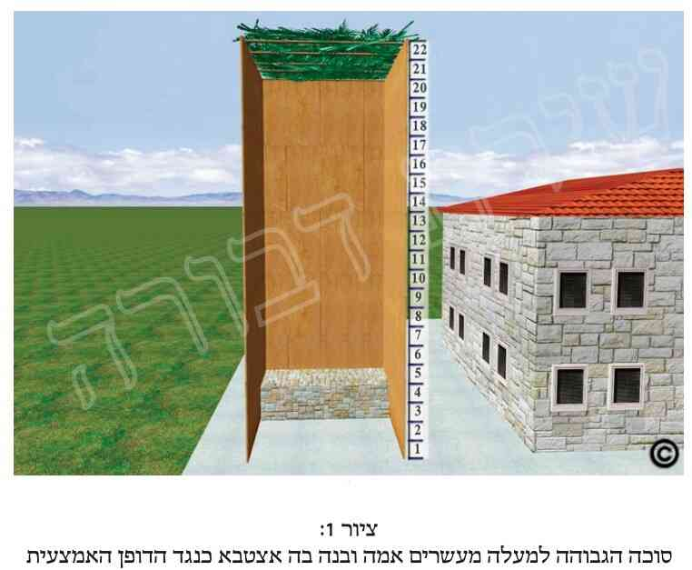

א. ישנן הלכות רבות לגבי כשרות הסוכה. הסוכה צריכה להיות במקום הראוי לעשותה, ממין הראוי, שתהיינה דפנותיה כראוי הן בגודלן, הן בטיבן והן במספרן. כמו כן צריך שהסכך יהיה כראוי, בטיבו, בגודלו ובכמותו, וכן צריך שהסוכה לא תהא גבוהה יותר מהשיעור, לא נמוכה פחות מהשיעור, ולא קטנה בשטחה מהשיעור, ועוד הלכות רבות. בסייעתא דשמיא נבאר זאת בפרקים הבאים, ובפרקנו נעסוק בדיני מידות הסוכה.
ב. כפי שכתבנו, אין לעשות את הסוכה גבוהה מדי, ולא נמוכה מדי. הגובה הגבוה ביותר הכשר לסוכה הינו עשרים אמה, שהוא תשעה מטרים וארבעים ס"מ. הגובה הנמוך ביותר הכשר לסוכה הינו עשרה טפחים (שהוא שמונים ושנים ס"מ. ויש אומרים שהוא תשעים ושמונה ס"מ). ואם גובה הסוכה גבוה מהשיעור הגבוה הנ"ל, או נמוך מהשיעור הנמוך הנ"ל, הסוכה פסולה.
ג. אם הסוכה פסולה, פירוש הדבר שאין יוצאים בה ידי חובה. לכן בסוכה כזו אסור לישון אפילו שינת ארעי (כשם שאסור לישון כלל בבית), וכן אסור לאכול בה מאכלים בשיעור המחייב ישיבה בסוכה (כדלקמן בפרק ט'). כמו כן על הישיבה בה אין לברך את ברכת "ברוך... אשר קדשנו במצוותיו וציוונו לישב בסוכה".
ד. גובה הסוכה נחשב חלל הסוכה, והיינו מקרקעיתה ועד תחתית הסכך. לכן אם חלל הסוכה הינו עד עשרים אמה (וכנ"ל בסעיף ב'), אף אם חלק מהסכך הינו מעל עשרים אמה, הרי שהסוכה כשרה, כיון שחללה אינו יותר מעשרים אמה.
ה. שיעורי הגובה הנ"ל אמורים הן לגבי סוכה גדולה בשטחה והן לגבי סוכה קטנה בשטחה. וכן אין הדבר תלוי אם הדפנות מגיעות לסכך או שאינן מגיעות לסכך.
ו. עוד מדיני גובה הסוכה, כגון אם ניתן להגדיל או להקטין את גובהה וכיצד ניתן לעשות זאת, ראה כאן במקורות.
ז. כפי שכתבנו בתחילת פרקנו, אין לעשות את הסוכה קטנה מדי בשטחה. השיעור הקטן ביותר של הסוכה הינו שבעה טפחים על שבעה טפחים (שהם כחמישים ושבעה ס"מ באורכה, וכן ברוחבה. ויש אומרים שהם כששים ותשעה ס"מ באורכה, וכן ברוחבה). ואם עשאה פחות משיעור זה, הסוכה פסולה.
ח. סוכה שרוחבה הינו פחות משבעה טפחים, גם אם אורכה יותר משבעה טפחים, הינה פסולה, ואפילו שאורכה יהיה גדול ככל שיהיה. וראה לקמן (בפרק ה' סעי' כ' ובפרק ו' סעיפים כ"ז-ל"א), שלדעת כמה פוסקים ישנם מיקרים שבהם ניתן להגדיל את רוחב הסוכה גם כשהסוכה נמצאת במרפסת קטנה.
ט. אין די בכך שהסוכה תהיה לפחות בשטח של שבעה טפחים על שבעה טפחים, אלא צריך שבשטח זה יהיה גובה הסכך לפחות עשרה טפחים (כנ"ל בסעיף ב' בפרקנו).
י. סוכה, אף שתהיה גדולה באורכה וברוחבה ככל שתהיה, אינה נפסלת בכך בשום אופן.
יא. סוכה שאינה ריבועית אלא עגולה או בעלת חמש צלעות או יותר, צריך ששטחה יהיה לפחות בגודל כזה שניתן להכניס בה מרובע שווה צלעות בגודל של שבעה טפחים על שבעה טפחים (כמידות המבוארות לעיל בסעיף ז').
יב. אם הטפח השביעי של רוחב הסוכה הינו מוגבה מהרצפה עד עשרה טפחים (ששיעורם מבואר בסעיף ב'), אך יש מעליו עשרה טפחים עד לסכך, המנהג להקל בכך, ובפרט אם רגילים לשבת עליו, ומצטרף הוא לשיעור שטח הסוכה. ולכן מרפסת שיש לה מעקה בנוי, ורגילים לשבת עליו, מצטרף מעקה זה לשיעור שטח הסוכה, ואף מותר לשבת עליו (כמובן כשיש מעליו סכך כשר). וכל שכן שאם בלי מעקה זה כשרה הסוכה, שמותר לשבת על מעקה זה כשהוא תחת הסכך, ומקיים בכך מצוות ישיבה בסוכה.
יג. אדם שבשעת אכילתו ראשו ורוב גופו נמצאים בסוכה, ואילו חלק משולחנו (כמבואר במקורות) נמצא מחוץ לסוכה, אף אם הוא נמצא בסוכה גדולה, נחשב הדבר שאוכל הוא מחוץ לסוכה. וכן הדין אף אם האדם כולו יושב בסוכה, אך השולחן כולו נמצא מחוץ לסוכה, שאינו יוצא ידי חובת סוכה בכך. ודבר זה עלול להיות מצוי בסוכות הנמצאות במרפסות, כך שרוב בני הבית והשולחן נמצאים בתוך הבית, ורק הגברים הגדולים אוכלים בסוכה. וכל דינים אלה אמורים רק לגבי אכילה בסוכה. אך בשעת השינה בסוכה לדעת רוב הפוסקים אין צריך שיהיו השלחן או מיטה כלשהי בסוכה (אך ברור שמכל מקום חייב לישון בסוכה, אלא שאינו חייב לישון על מיטה).
יד. לדעת פוסקים רבים אם הסוכה גדולה דיה הן באורכה והן ברוחבה כשיעור הדרוש, אך יש בה פינה מסוימת הבולטת החוצה שאין בה שבעה טפחים על שבעה טפחים, אין לשבת או לישון בפינה זו, אך מותר לשים בה את השלחן. ויש מהפוסקים המתירים אף לשבת ולישון בפינה זו.
טו. יש מהפוסקים הסוברים, שאם עשה סוכה הכשרה בגודלה, אך האדם אינו יכול לישון בה אלא אם כן יקפל את רגליו, אינו יוצא בה ידי חובה לא רק בשינה אלא אף באכילה ובשאר הדברים, כיוון שהוא מצטער. ויש האוסרים בה רק את השינה בשל צערו לישון כך, ואחרים מתירים אף לישון בסוכה זו. ולמעשה אדם המצטער לישון כשרגליו מקופלות, אינו יוצא ידי חובה בסוכה כזו, הן בשינה והן באכילה ובשאר הדברים. אך שאר האנשים יוצאים ידי חובה בסוכה זו אף בשינה.
טז. אף סוכה שהינה גדולה משבעה טפחים על שבעה טפחים נפסלת היא אם מחמת הקישוטים התלויים בדפנותיה לא נשאר בה השטח הדרוש הנ"ל. ויש מהפוסקים הסוברים שאם לפני החג עשה תנאי שיוכל להוריד את הקישוטים בכל זמן שירצה, אין הקישוטים ממעטים את שטחה ואינם פוסלים את הסוכה. ואם גם כלי תשמיש כארון ומנורה ממעטים את שטח הסוכה, ראה כאן במקורות.
יז. דין סוכה שיש בה את שיעורי השטח והגובה כהלכה, אך הכניס בה כסא או מיטה שמהם עד הסכך אין את הגובה הנדרש (של עשרה טפחים, כנ"ל בסעיף ב'), ראה במקורות.
&הערות:
[1] א. עפי"ד הטור (סס"י תרכ"ה).
כתב המהרי"ל (בהל' סוכה): אמר מהר"י סגל, דהוא שאל מגדול אחד, אמאי האריך רש"י ושאר פוסקים במסכתות סוכה ועירובין יותר מבשום מסכתא. והשיב לו, לפי שדיניהם רחוקים מדעת הבריות, כגון גוד אסיק וגוד אחית, ודין לבוד, ודופן עקומה וכו'. והרבה כהאי גוונא אשר קשה לדעת סברתם, להכי חזרו הפרשנים להבינם ולהשכילם לכל. עכ"ל. הב"ד בהלח"ב (ריש פ"ה).
הנה דיני שיעור גובה הסוכה, אורכה ורוחבה הינם מדאו', עפ"י הגמ' בריש סוכה (ד"ב, א'), גבי שיעור כ' אמה שלומדים כן מפסוקים, משמע ששיעור כ' אמה הוי דאו'. ובס"ד לא נראה שזו רק אסמכתא בעלמא, בפרט שדנו שם בגמ' מדוע כל אמורא לא דרש מהפסוק שדרש ממנו חבירו. כך בס"ד נראה. וכן למשל עולה מדברי רש"י בסוכה (ד"ב, א' ד"ה "סוכה מדאורייתא"), ומשעה"צ (סי' תרל"ג סקי"ד).
וגם גבי שיעור גובה י' טפחים שלמדו כן בגמ' (בדף ה' ע"ב), ונחלקו ר"מ ורבי יהודה במקור הדין, נראה שהוא דאו'. ובפרט שר"י ס"ל דהוי הלל"מ. ואע"ג שכתב הרמב"ם (בהקדמה לפירוש המשניות. נדפס בש"ס וילנא, מס' ברכות, דנ"ד ע"א ריש העמודה השמאלית) שאין מחלו' בהלל"מ, מ"מ כבר כ' המהר"ץ חיות (לב"ק די"ז, ב') שמ"מ מודה הרמב"ם שבפרטי הלכות אכן יש מחלו', כפי שמוכח מפי' המשניות לרמב"ם בסוף עדיות.
וגבי שיעור ז"ט על ז"ט שהוא שטח הסוכה. כ' בקרית ספר ששיעור סוכה קטנה הוא הלמ"מ, ומורנו הגר"ח בן עטר בספרו "ראשון לציון" כתב בד' הרמב"ם (ר' פ"ד מסוכה ה"א) שהפסול בסוכה קטנה הוא מן הדין, ולא משום גזירה שמא ימשך שהיא רק מדרבנן. שהרי הרמב"ם שם לא הזכיר טעם שמא ימשך. ואכן דנו הפוס' אם מה דבעי באורך הסוכה וברוחבה זע"ז טפחים ולא סגי בוע"ו טפחים, האם הטפח השביעי חיובו מדאו' או מדרבנן. שבאמת שלד' רוב הראשו' גם הטפח השביעי הינו מדאו' [שכן עולה מדברי הר"ן, הריטב"א וש"פ, וכדלקמן].
אמנם יש רבים שדנו בדברי הרי"ף שהטפח השביעי חיובו רק מדרבנן. מדכלל את שיעור סוכה קטנה דהוא זע"ז, עם פסול סוכה כששולחנו מחוץ לסוכה, וכ' דחד טעמא לשניהם, דמשמע ששניהם מדרבנן. והיינו שמדאו' החיוב וע"ו, וחכמים תיקנו שיהא זע"ז כדי שהשולחן יהיה בסוכה ולא ימשך אחר שולחנו. וכ"כ בהבנת הרי"ף הר"ן על הרי"ף (בסוכה די"ג,א' בדפי הרי"ף) ועוד ראשו', וכ"כ שעה"צ (סי' תרל"ד סק"ז), ובה"ל (סי' תרל"ד ס"א סוד"ה "פסולה") וש"א. וע"ע במלחמות (ד"ג, ב' בדפי הרי"ף).
אמנם יש שהבינו מדברי הרי"ף שהוא סובר שדין הטפח השביעי חיובו ג"כ מדאו'. שכ"כ הרמב"ן בדעת הרי"ף [הב"ד בשעה"צ (סק"ז) ובבה"ל (שם סוד"ה "פסולה")]. וכ"כ החזו"א (או"ח סי' ק"נ סק"ג). וע"ע בערוך לנר לסוכה (ד"ג,א'), ובספרו תוספת ביכורים (לסי' תרל"ג, שנראה מדבריו שהבין שלד' הרי"ף ג"כ הוי דאו' כדין הלל"מ, וטעם שמא ימשך מדין שיעורים הוא), בקרית ספר למבי"ט (הל' סוכה), בשו"ת דבר שמואל (סי' ר"ג), בשעה"צ (סי' תרל"ד סק"ז, שדן אי לרי"ף הוי דאו'), ובבה"ל (סס"י תרל"ד סוד"ה "אפילו אם", מה שהקשה ע"ד הרי"ף).
וכפי שכתבנו, ראשו' אחרים כתבו בהדיא שחיוב זע"ז הינו מדאו'. וטעמם משום שדירת קבע בעינן. ואע"ג דקיי"ל שסוכה דירת ארעי בעינן (ראה גמ' סוכה ד"ז,ב'), מ"מ קיי"ל בזה כב"ש, דקצת קביעותא בעינן, שתהא מחזקת ראשו ורובו ושולחנו, ואי לאו הוי דירה סרוחה (הר"ן על הרי"ף שם. וכ"כ הריטב"א). ר' כ"ז בבה"ל (שם. ועיי"ש מה שהקשה ע"ד הפמ"ג), בס' הלחב"ח (פ"ג הערה 1. עיי"ש מה שתירץ את קושית הבה"ל על הפמ"ג). ס' הסוכה (פ"ה הערות 3, 13) וש"א.
בהלחב"ח (פ"ג הערה 1) כתב שהנ"מ בין אם הטפח השביעי הינו מדאו' או מדרבנן, שהוא גבי מקום ספק (אי הוי ספק דאו' או דרבנן), או במקום ס"ס. וכן אי יש לחשבו בטפח שוחק או עצב, וכדו'.
ועוד הוסיף שם, שנראה שבמקום שאין לו סוכה אחרת אלא רק וע"ו, לא יבטל ממצות סוכה וישב בסוכה זו, עפי"ד הפוס' שבכל פסול דרבנן במקום הדחק קיי"ל דיושבים בפסולי דרבנן, ולרי"ף יוצא בזה [וציין שם לד' בית השואבה, והשפת אמת (לסוכה ד"ג,א'). ושכן מתבאר מדברי דה"ח, הגרע"א והבה"ל, שכתבו שהיושב בסוכה קטנה בגודל וע"ו ושולחנו בסוכה גדולה, דיוצא לרי"ף]. עכת"ד.
ובענין מה שהביא דברי הפוס' שאי הוי דרבנן ויש לו סוכה וע"ו, שישב בה, יש לדון מצד הדיון אי דבר שהוא מדאו' וחכמים הוסיפו גדר נוסף, אם לא קיים את דברי חכמים, היצא י"ח עכ"פ מדאו'. וכגון המקדש בליל שבת (דקידוש זה עיקר חיובו מדאו') אך לא קידש על היין (שחכמים הוסיפו גדר נוסף שיקדש דוקא על היין). וה"ה המברך בברהמ"ז רק ג' ברכות ראשו' בלא ברכה רביעית שחיובה מדרבנן, שדנו הפוס' אי עכ"פ יי"ח מדאו'. ואמנם בני"ד יש לחלק, שחכמים לא הוסיפו מצוה אלא הגבילו המצוה שיוצא י"ח דוקא בסוכה של זע"ז, הלא"ה לא קיים המצוה, וממילא לא יאכל ולא יישן בסוכה כזו, ודמי ליושב בביתו, דבטלה המצוה כליל וחכמים הפקיעו המצוה. ולכאו' דמי קצת לדין התוקע בשופר ברה"ש שחל בשבת, שבזה דנו אי עכ"פ יצא י"ח מדאו', או שחכמים הפקיעו המצוה והיא בטלה כליל. וה"ה לקורא המגילה בפורים שחל בשבת. ויש להאריך בדברים אלה, אך הזמן קצר. ור' מה שכתבנו ע"כ בס"ד במקראי קודש הל' רה"ש (פ"ד הערה נ"ו) והל' ליל הסדר (פ"ז הערה קט"ו ופ"ט הערה ס"ז) ולקמן בפרקנו (בהערה כ"ד ס"ק 1,8). וחכ"א העיר, שיתכן שגם קשור הדבר למחלו' הראשו' בענין עשה שאינו דוחה ל"ת ועשה, האם עכ"פ דוחה את הל"ת, מה שמורה שיש ערך למצוה גם באופן שלדינא אסור לעשותה. ושמא יש לחלק בין זה לני"ד. ואכמ"ל.
[2] ב. דין שיעור הגובה הגבוה ביותר שהוא כ' אמה, כך שנינו במשנה ריש סוכה, וכ"פ מרן (בסי' תרל"ג ס"א).
כתבו הפוס' שדין אמה בני"ד היא אמה בת ששה טפחים מצומצמים (היינו כשחושבין ד' אצבעות, והיינו ד' גודלין במקום הרחב, והן נכנסות לטפח, אז האצבעות דבוקות זב"ז). והטעם, דלחומרא אזלינן, והיינו כשיעור הקטן של טפח. וממילא כשהדבר מגיע לקולא אם ילך בטפחים מצומצמים, וכגון מדידת י"ט בגובה, או ז"ט על ז"ט לענין שטח הסוכה, בזה אזלינן בטפחים מרווחים, כדי שהדבר יהפך לחומרא, והשיעור המינימלי של הגובה והשטח יהיו גדולים יותר. ועי"כ מתווספת חצי אצבע לאמה [ב"י. פמ"ג. מ"ב (סי' תרל"ג סק"ב) ושעה"צ (ס"ק ב' וג'). כה"ח (ס"ק ב' וג') וש"א]. ושיעור אצבע הוא האגודל מאיש בינוני [ר' בה"ל (סי' תרל"ג ד"ה "למעלה"). לגרא"ח נאה הוי 2 ס"מ, ולחזו"א הוי 2.4 ס"מ].
ומה שכתבנו שי"א שהוא תשעה מטרים וארבעים ס"מ, זאת עפ"י שיעורי הגרא"ח נאה זצ"ל בספריו שיעורי תורה (סי' ג' סעי' כ"ד וכ"ה), שיעורי מקוה (בהקדמה) ושיעורי ציון (עמ' ע"ד). שכ' שם שאמה הוי ארבעים ושמונה ס"מ. ולפי"ז כ' אמה הוי 9.60 מטר. אמנם יש להעיר שבשיעו"ת (שם) כ' שבמקום שהוא חומרא, "ראוי להחמיר לחשוב האמה הדחוקה ארבעים ושבע ס"מ". ע"כ. ואע"ג שכתב זאת רק כחומרא, מ"מ למעשה כתב (שם בעמ' ער"ה סל"ט) וכן בספרו שיעו"צ (עמ' ע"ד) שהגובה הגבוה ביותר של הסוכה הוא 9.40 מ' מדינא. וא"כ משנה אחרונה עיקר, וזו דעתו לדינא. ושלא כמש"כ בשמו בהלחב"ח (פ"ג סט"ו) דהוי תשעה מ' וששים ס"מ.
ובאמת תחילה רצינו להוסיף בהלכות כאן שי"א דהוי אחד עשר מטרים וחמישים וארבעה ס"מ, והוא עפ"י הגאון החזו"א, וכפי שכתב בשיטתו גיסו הגרי"י קנייבסקי זצ"ל בספר שיעורין של תורה (עמ' ס"ג וס"ד), דכל אמה הוי חמישים ושבעה ס"מ ושני שליש הס"מ, ולפי"ז כ' אמה הוי השיעור הנ"ל [ובס' הלחב"ח (פ"ג סט"ו) כתב בשמו שהוא אחד עשר מטר וחמישים ושניים ס"מ]. אלא שראה לקמן בנספחים (נספח י"ז בקונטרס מידות האורך, בענפים 2-3) שכבר אמרו לי כמה גדולים שכאשר מידות החזו"א מביאות לידי קולא בדאו' אין לנקוט אותן. וכן עשינו.
[3] ג. הא דשיעור זה הוא י' טפחים, כך שנינו במשנה ריש סוכה, וכ"פ מרן (סי' תרל"ג ס"ח).
הטעם שסוכה זו פסולה, משום דכל שאינה גבוהה י"ט הו"ל דירה סרוחה ואין אדם דר בדירה סרוחה [ב"י. לבוש. כה"ח (סקל"ב. והוסיף דבעינן תשבו כעין תדורו)].
ומה שכתבנו שהוא שמונים ושנים ס"מ, כך הוא עפ"י שיעורי הגרא"ח נאה, כמש"כ בספריו שיעורי מקוה (עמ' קפ"ג) ושיעורי ציון (עמ' ע"ד). ואע"ג שכתב בשיעו"מ (עמ' קפ"ב) ובספרו שיעו"ת (עמ' רמ"ט ור"נ), שמידת טפח הוי שמונה ס"מ, מ"מ החמירו הפוס' בני"ד די"ט הוי טפחים מרווחים [פמ"ג. שעה"צ (סי' תרל"ג סק"ב)], ולכן כתב הגראח"נ דהוי שמונים ושנים ס"מ, דכך חשיב י"ט בטפח מרווח [עוד 2 מ"מ לטפח. וכמש"כ שם בשיעו"מ (עמ' קפ"ב סקט"ו) ובשיעו"ת (עמ' ער"ה סל"ט)].
ומה שכתבנו שי"א שהוא תשעים ושמונה ס"מ וחמישית הס"מ, כ"כ בשיש"ת (עמ' ס"ג) שטפח הוי תשע ושמונים ושתים מאיות הס"מ, ולפי"ז י"ט הוי תשעים ושמונה ס"מ וחומש. וזאת עפי"ד החזו"א (עיי"ש בשיש"ת). ור' לקמן בנספחים בקונטרס מידות האורך (נספח יז בפרט בענפים 2-4), שכתבנו עפי"ד בגדולים, שאם מידות החזו"א הינן חומרא (וק"ו בדאו'), שהרינו מזכירים בהלכות גם את המידות לשיטת החזו"א.
הקשה הרש"ש בחידושיו לסוכה (ד"ד, א'), אמאי כשרה הסוכה בגובה י"ט, הלא קומתו של אדם בינוני היא ג' אמות שהם י"ח טפחים. ולפי"ד התוס' בעירובין (דף מ"ח) שיעור זה הינו חוץ מראשו, וא"כ לא יוכל לעמוד בה בצורה זקופה. וכי עייל ונפיק ישוף אכרסיה. וציין בסו"ד לרמ"א בסי' תר"מ ס"ד ולמ"א. עכת"ד. ובדיבוק חברים העלינו בס"ד שיש נ"מ בין בית לדירה. ששיעור גובה של י"ט נחשב כשיעור בית חשוב, ולכן די בגובה זה. ומה שהיה קשה לרש"ש זה דלכאו' שיעור זה לא חשיב דירה שניתן לדור בה שבעה ימים. ולכן ציין לדברי הרמ"א בסי' תר"מ, שאף מי שישן וצר לו שמכופף ידיו ורגליו, דלא מיקרי מצטער. וה"ה לני"ד. דממ"נ חשיב בית. ואפי' מצד דירה ש"ד כיון שאף כשהוא מכופף לא חשיב מצטער. והדברים מתאימים לד' המ"ב (בסי' תר"מ סקכ"ו). עיי"ש.
[4] ד. כך מבואר בדברי המשנה הנ"ל בריש סוכה, בדברי הראשו', וכ"פ מרן בהדיא (בסי' תרל"ג סעי' א' וח').
[5] ה. כך בס"ד נראה פשוט, דסוכה פסולה כליתא דמי. וממילא אסור לעשות בה דברים שחייבים לעשותם בסוכה, כשינה, ואפי' שינת ארעי, וכאכילת קבע, וכמבואר בשו"ע (סי' תרל"ט ס"ב).
[6] ו. ג"ז בס"ד פשוט. וראה למשל בבה"ל (סי' תרל"ז ס"ג סוד"ה "ואם גזל").
[7] ז. כן פשט מרן (סי' תרל"ג ס"א), וכ"כ המ"ב (סי' תרל"ג ס"ק א' וכ"ה), כה"ח (סי' תרל"ג ס"ק א' ול"א) וש"פ.
[8] ח. מרן (סי' תרל"ג ססע"י א'). ואמנם מרן כתב שכ"ה כשכל הסכך מעל כ' אמה, אך אנו כתבנו זאת גבי כשחלק מהסכך מעל כ' אמה, כדי לחדד לקורא את המציאות, וגם משום שא"א לצמצם כ' אמה בדיוק.
ואי רק הקורה המחזקת הסכך היא בתוך כ', ר' הדין בבה"ל (סי' תרל"ג ס"א ד"ה "אפי'") דמשמע שאוסר.
[9] ט. מרן (סי' תרל"ג ס"א). וכתבו הפוס' שד"ז בא לאפוקי ממ"ד דטעם פסול גובה הסוכה יותר מכ' הוא משום דאין צילו מתפשט לכל הקרקע שתחתיו אלא מחמת הדפנות הגבוהות, ואנן צל סוכה בעינן. וכן בא לאפוקי ממ"ד דטעם פסול הגובה משום דלא שלטא ביה עינא מתוך גובהו, ואינו רואה שיושב מתחת לסכך. אלא טעם הפסול של סוכה יותר מכ' משום דסוכה דירת ארעי בעינן, ושיערו חכמים דעד כ' אמה א"צ ליתן כ"כ לב על חיזוק במחיצות ודיו במחיצות קנים. ואילו בסוכה גבוהה יותר מכ' אמה צריך לעשות הכתלים חזקים כעין בית שלא יפלו מרוב גובהם [ב"י. מ"ב (סק"ג) כה"ח (סק"ה) וש"א]. ואם עשאה מעל כ' אמה, הסוכה פסולה אפי' שעשאה ארעי (גמ' סוכה), וכגון שעשה מחיצותיה ארעי והיא לא נפלה [ב"ח. שעה"צ (סק"ז)].
כתבו הפוס', דלפי הטעם הנ"ל, אם היו הכתלים מגיעים לסכך והסוכה רחבה, כ"ש דפסולה משום דירת קבע (הרי"ף וש"פ). ולפי"ז לכאו' היה צריך להכשיר סוכה שהסכך גבוה מכ' אמה אך הדפנות נמוכות מכ' אמה, שהרי בזה א"צ דפנות חזקות. אלא דאפשר שיש לאסור משום הקנים הגבוהים שעליהם מונח הסכך שהם צריכים להיות חזקים ועבים כשל בית (שעה"צ סי' תרל"ג סק"ה). והב"ח כ' עוד טעם לפסול סוכה כזו (שעה"צ שם). ומ"מ אם עשאה פחות מכ' אמה, אע"פ שעשאה חזקה, כשרה [גמ'. מ"א. מ"ב (סק"ג). כה"ח (סק"ד)], משום דלא בעינן אלא רק שיהיה ראוי לעשותה ארעי. והיינו התורה הקפידה רק היכא דמוכרח לעשותה קבע, כמו למעלה מכ' [מ"ב (שם ססק"ג) וכה"ח (סק"ד)].
הטעם דבעינן דירת ארעי, משום דכתיב "בסכות תשבו שבעת ימים", והסבירו בגמ' דאמרה התורה צא מדירת קבע ושב בדירת ארעי. והיינו מדכתיב תשבו ולא כתיב תדורו (שעה"צ סי' תרל"ג סק"ד).
[10] י. מרן (סי' תרל"ג ס"א). והיינו אע"ג שהמחיצות אינן מגיעות לסכך, אלא שהסכך תלוי על קנים גבוהים (כמש"כ מרן בסי' תר"ל ס"ט), כיון שהסכך למטה מכ', כשרה [מ"ב (סי' תרל"ג סק"ד)].
[11] יא. דין סוכה שיש בה גובה י"ט אך לא בשטח של ז' על ז' טפחים, ר' לקמן בפרקנו (בסעיף ט').
כיון שכתבו הפוס' עוד דינים רבים גבי גובה הסוכה, אך אינם שכיחים כ"כ, לכן בס"ד נביאם כאן רק במקורות.
כתב מרן (סי' תרל"ג ס"ב): היתה גבוהה יותר מכ', והוצין (פי' ענפים קטנים עם העלין שלהם) יורדים למטה [ר"ל שאם נמדוד עד ההוצין ליכא חלל יותר מעשרים (מ"ב סק"ה. ועיי"ש שעה"צ סק"ח)]. אם צלתן מרובה מחמתן כשרה [פי' אם צלתן של אותן ההוצין, אי שקלית לסכך העליון יהיה צלתן מרובה מחמתן, כשרה, דמנינן כ' מהם ולמטה (מ"ב סק"ו)], ואם לאו – פסול [ור' בה"ל (שם ד"ה "ואם לאו")]. עכ"ל. וע"ע כה"ח (ס"ק ו', ז').
עוד כתב מרן כמה דינים גבי סוכה שגובהה יותר מכ' אמה וע"י פעולותיו ממעט את גובהה, מבלי להנמיך את הסכך:
כתב מרן (שם ס"ג): סוכה שחללה יותר מכ' אמה ותלה בה דברים נאים וע"י כן נתמעט חללה, לא הוי מיעוט [ואפי' היה ע"י צילתן מרובה מחמתן. והטעם, דלאו מין סכך הוא, כגון שעיטרה בקרמים המצויירים. וי"א אפי' מיעטה בעשבים ובפרחים שהם כשרים לסכך, ג"כ לא הוי מיעוט כל שלא תלאן אלא רק לנאות הסוכה בלבד ולא לשם צל, דאז אין שם סכך עליהם, כבשו"ע סי' תרל"ה (מ"ב סק"ז. ועיי"ש בבה"ל ד"ה "ותלה בה")]. והמשיך מרן, שכן אם מיעטה בכרים וכסתות [היינו שנתן אותם בקרקעיתה להגביהה (מ"ב סק"ח)], לא הוי מיעוט, ואפי' ביטלם [והטעם, דבטלה דעתו אצל כל אדם, שאין שום אדם מפסיד ממונו ומניח כריו בעפר ואבנים ומבטלן (ר"ח. מאירי. מ"ב סק"ט. ועיי"ש בבה"ל ד"ה "לא הוי")]. וע"ע כה"ח (ס"ק ח'-י"א).
ועוד שם בשו"ע (סעי' ד'): מיעטה (את גובה הסוכה) בתבן וביטלו, ה"ז מיעוט [ודוקא בתבן, אך בתבואה ששטחה ע"ג הקרקע לא מהני אפי' בשמבטלם, דבטלה דעתו, וכמו בכרים וכסתות (מ"ב סק"י. ור' שעה"צ סקי"ב). ואפי' גבי תבן, נחלקו הפוס' בזה (עפ"י השו"ע סי' שנ"ח ס"ב). די"א דוקא כשמבטלו לעולם, וי"א דדי שמבטל לאותה שבת. ולפי המקילים, הכא ג"כ די שמבטל לכל ימי החג שלא להזיזם ממקומם, ונטו האחרו' להקל בזה [מ"ב (סקי"א). ועיי"ש בשעה"צ (סקי"ד), דאע"ג שגבי סוכה הוי פלוגתא בדאו', אפשר דיש לצרף בזה ד' התוס' בשבת דמדאו' ממעט כל דבר ואפי' דבר הניטל. וכ"פ ביבי"א (ח"ג חיו"ד סי' י"ב סק"ה), דסגי בביטול לשבעת ימי החג וא"צ ביטול לעולם]. ודבר שנחשב כמיעוט והסוכה כשרה אף שהסכך היה יותר מכ' אמה, אזי א"צ לנענע הסכך מחדש אע"ג דהיתה פסולה קודם שמיעט גובהה, וכמש"כ בסי' תרכ"ה ס"ב ברמ"א (מ"ב סקי"ב). וכ"כ בחזו"ע (סוכות עמ' י"א ס"ד)].
והוסיף מרן, שכ"ש אם מיעט ע"י עפר וביטלו, שה"ז מיעוט והסוכה כשרה. אבל סתם אינו מיעוט ואפי' בעפר, עד שיבטלנו בפה [וי"א שגם בביטול בלב סגי (ראה חזו"ע סוכות עמ' י"א בשם רבינו מנוח פ"א מסוכה הי"ג שכתב כן. וכ"כ במ"ב סקי"ג עפ"י המ"ב סי' שע"ב ס"ק קכ"א). וכתבו האחרו' דאסור למעט הסוכה ביו"ט דהוי כעין בונה וכן משום שעי"כ מתקן הסוכה ומכשירה ואסור, כדין הדס הנזכר בסי' תרמ"ו (מ"ב סקי"ג). ולכן ימעט גובהה לפני יו"ט או בחוה"מ (ואז היא פסולה ביו"ט ראשון). וע"ע בשעה"צ (סקט"ו), גבי מיעטה בעיו"ט ורוצה לבטלה ביו"ט, אי הוי כמו להרים תרומה בשבת דאסור אפי' בקריאת שם בלבד. ובחזו"ע (סוכות עמ' י"א הערה ה') הב"ד רבינו מנוח (שם) שהתיר לבטלו ביו"ט משום שאין בזה מעשה כלל אלא שיכול לבטלו בלבו ודיו. וציין עוד לרפ"ע (ח"ג או"ח סי' כ"ד). וע"ע בבה"ל (סעי' ד' ד"ה "אבל סתם")]. וע"ע כה"ח (ס"ק י"ב-ט"ז).
כתב מרן (שם בסעי' ה'): היתה גבוהה מכ' (אמה) ובנה בה איצטבא [היא בנין אבנים או של עצים, וה"ה רצפה שמרצפין על הקרקע, וכשמודדין מראש האיצטבא ולמעלה ליכא יותר מכ' אמה עד הסכך (מ"ב סקט"ו)]. ובנה האיצטבא כנגד דופן האמצעי [היינו הדופן שכנגד הפתח, דסתם סוכה דופן רביעית פתוחה כולה (מ"ב ס"ק ט"ז)] על פני כולה ובה שיעור סוכה, כשרה כל הסוכה, אפילו מהאיצטבא והלאה. והטעם, משום שרואים את האיצטבא כאילו היא מתפשטת על כל הסוכה, לפי הכלל שפסל היוצא מן הסוכה נידון כסוכה (סוכה די"ט,א'). ולכן שרי בני"ד [וע"ע מ"ב (ס"ק ט"ו-י"ח), שעה"צ (ס"ק י"ז. עיי"ש שריעותא של הגובה קילא טפי מהריעותא של סכך פסול). וע"ע כה"ח (ס"ק י"ז-כ"ג)].
ועוד כתב בשו"ע (שם סעי' ו'): אם בנה האיצטבא מן הצד [היינו בדופן אחד, ונמשכת עד הדופן האמצעי, כך שיש לה ב' דפנות (מ"ב סקי"ט)] אם יש מן האיצטבא עד כותל השני פחות מד' אמות, כשרה על האיצטבא דווקא [היינו דוקא בשטח האיצטבא (מ"ב סקכ"א. עיי"ש גבי צד הפתח אי מותר לישב שם)]. ומ"מ כ"ז דוקא כשהדפנות מגיעות לסכך, ושרי מדין דופן עקומה (מ"ב סק"כ). ואם מהאצטבא עד לכותל יש ד' אמות, פסולה הסוכה (מרן שם). וע"ע במ"ב (ס"ק י"ט-כ"א) וכה"ח (ס"ק כ"ד-כ"ו).
ועוד שם בשו"ע (סעי' ז'): אם בנה האיצטבא באמצע, אם יש ממנו לכותל לכל צד פחות מד' אמות, כשרה על האיצטבא [מדין דופן עקומה. והיינו שמקילים בדין דופן עקומה גם בכמה רוחות בב"א (מ"ב סקכ"ב)] אפילו אם גבוה (האיצטבא) יותר מי' (טפחים – מ.ה.). אך אם יש בינה לכותל ד' אמות, הסוכה פסולה, אפי' שהאיצטבא גבוה י' (טפחים). ע"כ. וע"ע במ"ב (ס"ק כ"ב-כ"ד), שעה"צ (סקכ"ג) וכה"ח (ס"ק כ"ז-ל').
וראה בציורים שבסוף הספר  .
ולגבי סוכה שאינה גבוהה י"ט ולכן היא פסולה, כתב מרן שם (סעי' ט'): היתה גבוהה מי', והוצין יורדים לתוך י', אפי' אם חמתן מרובה מצילתן, פסולה (הטעם ר' במ"ב סקכ"ו. ואם היא פסולה לגמרי אפי' בדיעבד, ר' בשעה"צ סקכ"ה שיש דעות בזה). אבל אם הנויין יורדין לתוך י', אינם פוסלים [דכיון שהם לנוי הסוכה בטילי אגבה דסוכה ולא מיקרי עי"כ דירה סרוחה. וה"ה אם תלה בסוכה כלים שאין ממעטים את י' הטפחים ואינם פוסלים. ואפשר דאף נוי ממין הסוכה כשושנים ועשבים נאים אין ממעטים השיעור ואינם פוסלים, כיון שתלאם לנוי (מ"ב סקכ"ז ושעה"צ סקכ"ז)]. וע"ע כה"ח (סקל"ג-סקל"ט).
ועוד כתב מרן (שם סעי' י'): היתה נמוכה מי' וחקק בה להשלימה לי', ויש בחקק שיעור הכשר סוכה, אם אין בין חקק לכותל ג' טפחים – כשרה [דאמרינן לבוד, והוי כמו שהכתלים מגיעים עד החקק. ומ"מ לאכול ולישון חוץ לחקק, בין לצד הפתח בין לצד הכתלים החמירו כמה פוס' בזה, כיון שהיא פחותה מי"ט (מ"ב סקכ"ט. והמחמירים הנ"ל הם הטור, הב"ח, הדרישה והט"ז)]. ואם יש בין החקק לכותל ג' טפחים, פסולה [ולא מתכשר משום דופן עקומה, דכל שאיננה גבוהה י"ט איננה דופן ולא נאמרו בה הל' דופן (מ"ב סק"ל)]. וכתבו מהאחרו' שכל דין זה של חקק לצורך י"ט, לאו דוקא בחקק בקרקע, אלא ה"ה אם היה הסכך עב ונטל מהסכך מלמטה עד שנעשית גובה של י"ט, דכשרה [מ"א. מ"ב (שם סקכ"ח)]. וע"ע בענינים אלה בכה"ח (ס"ק מ'-מ"ד).
הנותן מיטתו בסוכה, ואין מעל המיטה י"ט עד הסכך, כשרה הסוכה, שהרי יכול להוציא המיטה ולהשתמש תחתיה [תוס' סוכה (דכ"א,ב') עפ"י הירושלמי, דאין הסוכה נפסלת בשביל שהכניס בה מיטה ומיעט אוירה, דומיא דכרים וכסתות. וכ"כ הרא"ש בסוכה (שם), וכ"כ רי"ו, וכ"פ בטור ובשו"ע (סס"י תר"ל). אמנם אם היו מחיצות סביב המיטה ומחוברות אליה, ומשמשות כדופן, ראה בשו"ע (סי' תר"ל סי"ג), בנו"כ, ובס"ד לקמן (בפרק ג')].
[12] יב. עיקר ד"ז כתבו מרן (בסי' תרל"ד ס"א) עפ"י הגמ' בסוכה, וכפירוש הרי"ף והרא"ש.
והטעם דסוכה קטנה אינה כשרה, משום דלאו דירה היא כלל אלא דירה סרוחה [ר"ן. מ"א. בית השואבה. שעה"צ (סי' תרל"ד סק"א), כה"ח (סק"ג) וש"פ]. וראה עוד בהערה הבאה.
בס"ד נראה פשוט, ששטח הסוכה הינו השטח הפנימי, ללא צירוף עובי הדפנות. שהרי מדובר שאדם נכנס לתוך חלל זה של זע"ז טפחים.
[13] יג. כן איתא בגמ' סוכה (ד"ג,א'): הלכה, צריכה (הסוכה) שתהא מחזקת ראשו ורובו ושולחנו. ע"כ. וכ' הרא"ש, והיינו ז"ט על ז"ט. דגברא באמתא יתיב (והיינו ו' טפחים על ו' טפחים), ושולחנו טפח, כדאיתא בירו': וכמה כדי שלחן – טפח. ע"כ. הב"ד מרן בב"י (סי' תרל"ד) והוסיף שכ"ה מוסכם על כל הפוס'. וכ"פ מרן בשו"ע (סי' תרל"ד ס"א). וכ"כ הב"ח. הב"ד המ"ב (סי' תרל"ד סק"א) ובשעה"צ (סק"א), כה"ח (סק"א) וש"פ. ומה דלא סגי בו"ט על ז"ט (היינו וע"ו ועוד טפח אחד באורך ו' שהם ו"ט על ז"ט) ראה בשעה"צ (שם) דהוא משום דבציר מז"ט על ז"ט לאו דירה היא כלל אלא דירה סרוחה [מ"א. בית השואבה. שעה"צ (שם) וכה"ח (סק"ג) עפ"י הר"ן. ע"ע שם בשעה"צ].
כתבו הפוס' שמדידת ז"ט הללו הינה בטפחים מרווחים, שהם יתר על מצומצמים חצי אצבע לאמה [פמ"ג. שעה"צ (סי' תרל"ג סק"ב). וצ"ע גבי הטפח השביעי לד' הרי"ף דס"ל שהוא מדרבנן, אי סגי בטפח השביעי בטפח מצומצם. ומ"מ הנ"מ הינה קטנה מאוד, דאם ישנם ששה טפחים באמה, והנ"מ לאמה הינה חצי אצבע, הרי שהנ"מ לכל טפח הינה אחד חלקי שנים עשר משיעור אצבע. ואם אצבע הינה כשני ס"מ, הרי שהנ"מ לני"ד הינה שישית הס"מ שהיא בערך אחד וחצי מילימטר. וכולי האי לא מדייקינן. כך בס"ד נלע"ד, אע"ג שלקמן בריש הערה י"ד הבאנו דברי הגרא"ח נאה שדקדק עד כדי שני מילימטרים].
ואי שיעור ז"ט על ז"ט הוי מדאו' או מדרבנן, ר' לעיל בפרקנו (בהערה א'). וע"ע בשעה"צ (סי' תרל"ד ססק"ז, ודן אי לרי"ף הוי דאו', ונשאר בצ"ע) וע"ע בבה"ל (סס"י תרל"ד סוד"ה "אפי'", מה שהקשה ע"ד הרי"ף) ואכמ"ל].
הקשה הרש"ש בחידושיו לסוכה (ד"ג, א'), הרי קיי"ל שהסוכה צריכה להכיל את ראשו ורובו של האדם. וכיצד בשטח של זע"ז טפחים יכול להכנס ראשו ורובו, ה"ז שטח מאוד מצומצם. ותי' ב' תירוצים: הא', דמש"נ ראשו ורובו, הרי שרובו זה רוב מנין איבריו, דחשיבי גם לענין טומאה ברפ"ב דאהלות. ולפי המבואר שם בספ"א נמצא רוב מנין איבריו במיעוט הגוף שכלפי הראש עם הראש. ותירוץ ב', דודאי הסיבתן לא היתה בפישוט כל הגוף בשווה, אלא דראשו וצוארו וקצת מגופו היו בזקיפת אלכסון על משענת הכותל או ראש המיטה, וא"כ גם גובה הסוכה מסייע להכיל קצתו. עכת"ד. הב"ד בסה"ס (במיל' לפ"ח סק"מ) ולקמן (פ"ח הערה פ"ה). אמנם ק"ק לי הקטן מש"כ בתי' הראשון, דלכאו' אין זה פשט הדברים. דלפי"ז הול"ל ראשו "ורוב איבריו", או "רוב מנין איבריו". אך מי אני שאחלוק על רבינו הרש"ש. ומ"מ נלע"ד בס"ד, שאולי אפשר לומר עוד הסבר: שאם אדם אינו שוכב במקביל לדפנות הסוכה (שאורכן רק ז"ט) אלא שוכב מפינה לפינה באלכסון, הרי שבאופן זה יכול הוא לשכב כשעשרה טפחים ומעט יותר מגופו הינם בתוך הסוכה. וכיון שגובה אדם בינוני הינו י"ח טפחים, הרי שרובו הוא פחות מעשרה טפחים. אמנם לפי"ד התוס' בעירובין (דף מ"ח) גובה האדם י"ח טפחים היינו חוץ מראשו. ולפי"ז גם אם האדם ישכב באלכסון בקרקעית הסוכה אין זה מועיל להכיל את ראשו ורובו. וא"כ לפי הסבר התוס' אין התירוץ שלי נכון, והדרא קושיא לדוכתא.
כ' בסה"ס (פסקי הגרשז"א זצ"ל, דתנ"א סקט"ז) שדין ישיבת ראשו ורובו הוא לכתחי' (ר"ל שמציאות זו אינה נחשבת רק בדיעבד. ור' ביו"ד רס"י כ"א, ששחיטת רוב סימן הינה רק בדיעבד, אך לכתחי' צריך לשחוט את כל הסימן). והוכיח כן ממה שנוהגים לישב בסוכה סמוך לשולחן כשהרגלים וחלק מהברכיים הם תחת השולחן. ואם השולחן גבוה עשרה טפחים נמצא שרק ראשו ורובו בסוכה ומיעוטו חוץ לסוכה. עכת"ד.
תוך כדי הדיונים הנ"ל בשיעור הקטן ביותר של גובה הסוכה, אורכה ורוחבה, הסתפקתי כיצד מתאימים שיעורים אלה לשיעוריו של אוהל סיירים, והאם ניתן לקשר ביניהם. שהרי שיעורו של אוהל סיירים באורכו הינו גדול יותר מז"ט, ואילו ברוחבו הינו בערך כז"ט לכל אדם (שהרי שני בני אדם דרים בו). וגם שיא גובהו (שהריהו משופע משני צדדיו וגובהו המקסימלי הינו באמצעו) הוא בערך כעשרה טפחים (וכ"ז הוא במידות הגרא"ח נאה, שטפח הוי כשמונה ס"מ). ונוסף לשני החיילים שדרים בו הרי הם מכניסים לשם את שני הקיטבגים הענקיים שלהם כשהם מלאים ציוד. וא"כ יוצא שגובה אוהל-הסיירים הינו נמוך מהשיעור המינימלי של גובה הסוכה, ואילו אורכו הריהו גדול יותר מהשיעור המינימלי של אורך הסוכה. אלא שבס"ד נראה שתשמישיו של אוהל סיירים שונים מאלה של הסוכה. דבאוהל סיירים בדר"כ רק ישנים ומאפסנים ציוד אישי. אך עפי"ר אין אוכלים בו אלא אוכלים מחוצה לו. ואילו שיעור הסוכה נקבע עפ"י ישיבתו של האדם בה ("גברא באמתא יתיב"). ואע"ג שהם היו סועדים בהסבה ולא היו אוכלים זקופים כמונו, מ"מ לענין אכילה בסוכה לא התחשבו בהסבה אלא הסתפקו באכילה בישיבה, ובזה היה די בזע"ז (ר' מ"א ושעה"צ סי' תרל"ד ססק"א). אמנם מעיון בדברי רש"י בסוכה (ד"ב, ב' ד"ה "ראשו ורובו") נראה שדוקא האכילה בהסבה היא הקובעת, מדכתב גבי שיעור ראשו ורובו, שדרך סעודתן היתה בהסבה על מיטות ואין אוכלין זקופים ויושבים כמונו, לפיכך הוצרך לומר ראשו ורובו, לאפוקי סוכה קטנה שראשו ושולחנו נכנסים בה ולא רובו, או ראשו ורובו נכנסים בה ולא שולחנו. עכת"ד רש"י. ולגבי אדם ישן, הרי שיעור זע"ז מספיק כדי שיוכל לישון שם אף אם יצטרך בשל כך לכפוף ידיו ורגליו, דלא חשיב מצטער [וכמש"כ בתה"ד וברמ"א (סי' תר"מ ססעי' ד'). ועיי"ש במ"ב (סקכ"ו)]. וראה עוד ע"כ לקמן בפרקנו (בהערה כ"ח).
ושאלתי את הג"ר אברהם יצחק אולמן שליט"א (חבר הבד"ץ של העדה החרדית פעיה"ק ירושת"ו), מדוע קבעו שיעור סוכה לפי אופן האכילה, דגברא באמתא יתיב ועוד טפח לשלחנו. מדוע לא קבעו כן דוקא לפי השינה. ואמר לי הגרא"י אולמן שליט"א שהעיקר זה האכילה. ולכן גם מברכים "לישב בסוכה" על האכילה ולא על שינה. ושאלתיו, אך מאידך שינה אפי' ארעי אסורה מחוץ לסוכה, ואילו אכילת ארעי מותרת, א"כ רואים שהשינה חשובה יותר. וענה לי הגראי"א שניתן לישון גם בסוכה של זע"ז אם ישן בישיבה ומוריד ראשו ע"ג השלחן (אך יש חולקים ע"כ, וכנ"ל בשם הנה"ש והפמ"ג – מ.ה.). ושאלתיו, אך ה"ז לא נחשב כשינת קבע, ולכן מי שישן בישיבה כשראשו על שלחן או סטנדר אינו צריך לברך ברכת התורה שה"ז שינת ארעי, וכמש"כ הפוס' גבי ישן ואצילי ידיו על ברכיו. ואמר לי הגראי"א שהרבה צדיקים היו ישנים כך. וברור שהם ברכו ברה"ת. ושאלתי, אך צדיקים אלה כגון יעקב אבינו עליו השלום היו רגילים לישון כך, ואילו לסתם אדם אין זו נחשבת כשינת קבע [ראה מה שכתבנו בס"ד ע"כ במקראי קודש הל' יוה"כ (נספח ט"ז – קונטרס ברה"ש, פרקים ט"ז וכ"ג – מ.ה.)]. מ"מ הוסיף הגראי"א שאם ישן כשראשו ע"ג השלחן הריהו חייב לישון כך בסוכה. והמשכנו להתדיין עם הגראי"א גבי אופן שינה בשכיבה בסוכה שגודלה זע"ז. ואמר לי שאכן יש לישון כשרגליו מקופלות וראשו ורובו בתוך הסוכה. עכת"ד. ומ"מ יש להעיר שאכן ישנן הלכות שלדידן שינה בישיבה ג"כ נחשבת כשינה. כגון מי שישן בליל תענית, ולא עשה תנאי שיוכל לאכול אחר השינה, הרי שאסור לו לאכול שוב, אפי' שיש עוד הרבה זמן עד עה"ש, ואפי' שישן רק בישיבה, משום דחשיבא שינה. וכמש"כ מרן בב"י (סי' תקס"ד), וכן נפסק להלכה כד' רוה"פ (ושלא כרי"ו). ר' מה שכתבנו בס"ד במקראי קודש הל' ג' תעניות (פרק א' הערות נ"ו וס'). וכ"ה הן לספרדים והן לאשכנזים.
[14] יד. כתב הגרא"ח נאה זצ"ל בספריו ששיעור טפח הינו שמונה ס"מ [ראה שיעורי תורה (פ"ג סעי' כ"ה, עמ' רמ"ט-ר"נ), ושיעורי מקוה (עמ' קפ"ב)]. אמנם גבי סוכה דאזלינן לחומרא, כ' שם שהשיעור הקטן ביותר לאורך הסוכה ולרוחבה הינו חמישים ושבעה ס"מ וחמישית הס"מ [ראה שיעורי תורה (פ"ג סעי' ל"ט, עמ' ער"ה), שיעורי מקוה (עמ' קפ"ג) ושיעורי ציון (עמ' ע"ד)]. וכן כתבנו כאן בהלכות, אך השמטנו את ב' המילימטר. ומ"מ באמת לדינא צריך 57.2 ס"מ.
ומה שכתבנו את הדעה השניה, הוא עפ"י שיעורי הגאון החזו"א, וכמש"כ הגריי"ק זצ"ל בשיעורין של תורה (עמ' ס"ג-ס"ד), ששיעור ז"ט על ז"ט הוא שבעים ס"מ על שבעים ס"מ, ולפחות ששים ותשעה ס"מ ועשירית הס"מ לאורך, וכן לרוחב. עכ"ד (עיי"ש מש"כ גבי שיעור טפח בסתמא). וגם בזה השמטנו בהלכות את שיעור עשירית הס"מ. דכולי האי ממילא קשה לאינשי לצמצם. ומ"מ באמת לדינא צריך לדעה זו 69.1 ס"מ.
[15] טו. מרן (סי' תרל"ד ס"א) עפ"י הגמ' בסוכה (ד"ג,א').
החזו"א (או"ח סי' ק"י סקכ"ח ד"ה "עוד יש לעיין") דן גבי ספסלים או מכונות הקבועים בקרקע, אי ממעטין שיעור הבית מד' אמות לענין עירובין, וכ' שכל שאין ד"א על ד"א פנויות לאו שמיה דירה. וכתבו כמה מרבני דורנו לדון עפי"ז גבי שיעור סוכה, אי ספסלים הקבועים בקרקע ממעטים שיעורה [ר' ספר הסוכה (וייספיש. ריש פ"ה. עיי"ש שהבין מהחזו"א שממעט לני"ד), וס' הלחב"ח (קארפ. עיי"ש שכתב שהחזו"א רק דן בכך)]. אמנם הם כתבו זאת כאילו החזו"א דן גבי סוכה, אך באמת החזו"א דן רק גבי עירוב. וצ"ע אי יש הכרח ללמוד מהתם גם גבי סוכה. ושאלתי ע"כ את הרה"ג אליהו ויספיש שליט"א (בעהמח"ס החשוב "הסוכה"), והבנתי ממנו שאכן יש מקום לדון בכך ולחלק בין סוכה לעירובין [ועיין בספרו (במיל' לפ"ה סקט"ז) שג"כ כתב גבי חילוק בין סוכה לעירובין]. ואכמ"ל.
[16] טז. עיקר ד"ז כתבוהו הט"ז, המ"א, הא"ר, המ"ב (סי' תרל"ד סק"א), כה"ח (סי' תרל"ד סק"ב) וש"א. ושלא כב"ח.
ומה שכתבנו שכ"ה אע"פ שאורכה יהיה גדול ככל שיהיה, כן עולה מדברי הפוס' הנ"ל, דזיל בתר טעמא, דבעי עכ"פ ריבוע זע"ז.
[17] יז. רא"ש. טור (סס"י תרל"א), רמ"א (סי' תרל"א ס"י), מ"ב (אותו סי' סקל"ג), כה"ח (סי' תרל"ד סק"ה) וש"פ. וכתבו כן גבי סוכה שגגה או דופנה משופעת, דמ"מ בעינן זע"ז בגובה י"ט. והוסיף הטור (שם) שאם יש שיעור זה אז כשרה כל הסוכה. ובאמת הרא"ש כ' ד"אפשר דאף תחת השיפוע שאינו גבוה עשרה, כשרה, מידי דהוה אפסל היוצא מן הסוכה". הב"ד הב"ח (סס"י תרל"א), וכ' שמ"מ הטור כ' בסתמא דכשרה לאורויי דאף מה שלמעלה מגובה י"ט, שאין בו לרבע זע"ז נמי כשר מהאי טעמא. ע"כ.
מכל הנ"ל עולה שאם אין י"ט גם מעל הטפח השביעי פסולה. ומ"מ בשו"ת מהר"ם זכות (סי' ל') כתב גבי דופן שעוביו טפח גבוה י"ט ומשמש כשלחן והוא בטפח השביעי של הסוכה, דאי לאו דמיסתפינא הייתי אומר שגם היא תכשר, דלא מצינו שיהא צריך גובה י"ט מן השלחן ולמעלה. הב"ד כה"ח (סי' תרל"ד ססק"ו), בסה"ס (מיל' לפ"ה סק"ו) ובהלחב"ח (פ"ג הערה 24 עמ' ס"א). אמנם מדבריהם נראה שדברי הרמ"ז שנויים במחלו'. וע"ע לקמן בהערה כ'.
[18] יח. רמב"ם. מרן (סי' תרל"ד ס"א) וש"פ. והטעם, דאע"ג דסוכה דירת ארעי בעינן מ"מ הא אפי' גדולה הרבה יכול לעשות מחיצותיה ארעי בהוצא ודפנא, ולכן אפי' עשאה בקבע כשרה [ב"ח. מ"ב (סי' תרל"ד סק"ב), כה"ח (סי' תרל"ד סק"ז) וש"פ].
[19] יט. עיקר ד"ז כתבו מרן (סי' תרל"ד ס"ב) גבי סוכה עגולה. וכתבו האחרו' שכיון שנמצא בה ריבוע של ז"ט על ז"ט, הרי שכולה כשרה וניתן לישב בכולה, וא"צ לצמצם לישב דוקא בתוך הריבוע [מ"ב (סי' תרל"ד סק"ג), שעה"צ (סק"ג שכן מבואר שם בבה"ל שכ"ד המ"א). כה"ח (סק"ח). ור' בבה"ל (רס"י תרל"ד ד"ה "סוכה") שלד' הביכור"י בהבנת המ"א יש לצמצם ולישב דוקא באמצעה ממש, באותו מקום שיש לרבע זע"ז. עיי"ש בבה"ל].
יש מהפוס' שכתבו שכדי לרבע זע"ז בתוך עיגול, יש לעשות הסוכה שהיקפה הינו 29.4 טפחים [שכ"כ הב"י (סי' תרל"ד), מ"ב (סק"ד) וש"א. ור' בד"מ (סק"א) וכה"ח (סק"ט)]. אמנם יש שהעירו שלפי שיטות החישוב המקובלות בדורנו, ההיקף צ"ל 31.1 טפחים [ספר הסוכה (במיל' לפרק ה' סק"ח)].
ומה שכתבנו שכ"ה גבי סוכה בעלת חמש דפנות או יותר, ג"ז כ' המ"ב (סי' תרל"ד סק"ד).
וגבי סוכה בעלת שלוש דפנות. הנה בס' הסוכה (וייספיש. במילואים לפ"ה סק"ה. מהדו' תשנ"ג עמ' רמ"א-רמ"ב) הביא דברי החזו"א (או"ח הל' עירובין סי' ח', והוא בסי' ע"א סק"ו) שבתנאים מסוימים בית בעל ג' דפנות חשיב כרה"י דאו' (ונראה שכוונתו שם שהוא בתנאי שהזוית בין הכתלים הינה פחות מתשעים מעלות). וכ' זאת גבי עירובין. ומזה רצה ללמוד בס' הסוכה (שם) דה"ה גבי סוכה אם יש לה ג' דפנות חשיב סוכה, ואי יש לה זע"ז הריהי כשרה. אמנם הוסיף לדון שם גבי הפינות (הזויות) של סוכה משולשת זו, במקומות שאין בהם זע"ז, אי חשיב כחלק מהסוכה לישון ולאכול שם. ורצה ללמוד מדברי הפוס' אי שרי לישב בסוכה עגולה במקום שאין זע"ז. ומ"מ למעשה נשאר ע"כ בצ"ע. עיי"ש.
ולכאו' היה מקום להשוות ני"ד לדין סוכה שחקק בה גובה י"ט, שכתבו הפוס' לגבי שינה ואכילה חוץ לחקק, שיש שהחמירו בזה ולא מתכשר אגבה דחקק, וכמש"כ גבי איצטבא באמצע הסוכה (ראה למשל מ"ב סי' תרל"ג סקכ"ט). אך לכאו' יש לחלק בין התם לני"ד, דהתם פסלו הצדדים משום דא"כ זו דירה סרוחה דהיא פחותה מי"ט, משא"כ בני"ד שאינו דירה סרוחה אלא ספק אי חשיב כחלק מהסוכה. ומסיבה זו לכאו' אין להשוות את ני"ד גם לדין סוכה העשויה כצריף המובא בשו"ע וברמ"א (סס"י תרל"א). ומ"מ אין בלבי להכריע בני"ד. אמנם העיר חכ"א, שנראה שהמתירים בדין חקק ובסוכה העשויה כצריף, נראה שיתירו גם בני"ד לאכול בסוכה זו מחוץ לריבוע של זע"ז. ונראה בס"ד שהצדק עמו. ומ"מ גם לדעת האוסרים בחקק ובעשויה כצריף נראה שיש להחיל את מש"כ הפמ"ג, שכ"מ שיש פלוגתא דרבוותא בסוכה, אזי אם הוא בדאו' אזלינן לחומרא, ואי לית ליה סוכה אחרינא, אוכל שם בלי ברכה. ואי עסקינן בפסול דרבנן, אזי אם יש לו סוכה אחריתא ראוי להחמיר ולילך לשם, ואי לית ליה סוכה אחריתא, יוצא בה י"ח וברוכי נמי מברך. ומ"מ סיים שעדיין צ"ע קצת. עכ"ל. הב"ד המ"ב (סס"י תרל"א. וע"ע מש"כ בסי' תרכ"ט סק"נ). וע"ע מרן ורמ"א (סי' תרמ"ט ס"ו). ואכמ"ל.
[20] כ. עפי"ד הדבר שמואל (סי' ר"ג). וכתב כן דוקא גבי סוכה שיש בה וע"ו ויש בה דופן שעוביה טפח וגבוהה עשרה טפחים שעליה מסדר שולחנו. וטעמו, שאם דופן זו הינה חזקה, ומעליה יש י"ט, אז נוהגים להקל, דחשיב כאילו קרקעית הסוכה מגיעה עד ראש אותה דופן, כיון שיכול לסומכה במסמרים בל ימוט, ולישב על השלחן שיש ממנו ולמעלה שיעור הכשר סוכה, אם כי גם בזה לבי נוקפני קצת (והוסיף שתימה בעיניו שלא מצא שום ביאור ע"כ בספרי הפוס'). ע"כ. הב"ד יד אהרן. שע"ת. כה"ח (סי' תרל"ד סק"ו), ס' הסוכה (במיל' לפרק ה' סק"ו, עמ' רמ"ב), ס' הלחב"ח (פ"ג סי"א עמ' ס"א) וש"א. ואגב, הפוס' הנ"ל לא כתבו אם מדרגה זו משמשת כדופן א' מג' הדפנות של הסוכה. אך אם אמרינן שמדרגה זו הינה חלק משטח הסוכה, הרי בס"ד נראה שאיננה נחשבת אחת מג' הדפנות, אך מ"מ אם יוצא ממנה מעקה מברזל, הרי מסתבר שמעקה זה, כשגובהו לפחות י"ט וחלים בו דיני דופן (כגון שתי וערב), הרי שהוא יכול לשמש כא' מג' הדפנות החיוביות של הסוכה. כך בס"ד נלע"ד.
אמנם כפי שהבאנו לעיל (בהערה י"ז), מהר"ם זכות בשו"ת שלו (סי' ל') כתב להקל בני"ד אף כשאין גובה י"ט אויר מעל דופן זו, וטעמו דלא מצינו שצריך י"ט מן השלחן ולמעלה. ע"כ. הב"ד כה"ח (סי' תרל"ד סק"ו). אמנם נראה שד' רוה"פ להחמיר ולהצריך י"ט אלה מעל השלחן. שכ"כ יד אהרן, השע"ת, ובית השואבה, וכ"נ מד' חזו"ע (סוכות ד"ט סוף הערה ג'). וטעמם, דדי שהקלו ביש בו י"ט מעליו. וע"ע בביכורי יעקב (סי' תרל"ד ס"ו).
אמנם יש להעיר בענין מש"כ שם הדב"ש שמדובר בדופן שהיא גבוהה י"ט. לכאו' מקמ"ל בזה. האם בא למעט שבגבוה פחות מי"ט אין להתיר, או אף בגבוה הרבה מעל י"ט אין להתיר משום שאינו ראוי לשימוש כשולחן. א"כ מדוע דוקא בי"ט כשר. וכי כל השלחנות בעולם גובהם י"ט לא יתר ולא פחות. ואכן מצאנו בס"ד בספר הסוכה (ויספיש. במיל' לפ"ה סק"ו, עמ' רמ"ב) שהב"ד שו"ת חלקת יעקב (ח"ג סי' ט"ז סק"ג) שכתב לדון, דאפשר שבאופן זה שאין הדופן גבוהה י"ט אזי אינה חולקת רשות לעצמה, ובזה אולי אף הדב"ש מודה דעדיף טפי להקל, ושכ"מ מדברי הרמ"ז שם לחלק בזה ולהקל.
ואם דופן זו אינה גבוהה אפי' ג"ט, כ' בס' הסוכה שם שפשוט שמצטרפת מדרגה זו לשיעור הסוכה, כמבואר בר"ן בסוכה (ד"ד,ב') לענין חקק.
בשו"ת חלק"י (שם) כתב, שאין להתיר בני"ד אלא כשרוחב רצפת המרפסת הינה לפחות ו' טפחים, ויחד עם רוחב המעקה יש ז' טפחים. אבל אם רוחב המרפסת פחות מו' טפחים, אף שבמעקה יש רוחב שני טפחים ויותר, אין לצרפה לשיעור הכשר סוכה אא"כ גובה המעקה פחות מג' טפחים. והוסיף שיכול להניח נסרים וכדו' בקרקעית המרפסת עד שיהיה גובה המדרגה פחות מג"ט, ויבטל הנסרים בפיו לכל החג. ומצוה מן המובחר שבכלל יחברם במסמרים למרפסת. ע"כ. הב"ד פסתש"ו (סס"י תרל"ד).
ועוד בענין מדרגה זו. בסוף ספר הסוכה (ויספיש. בפסקים והערות בשם הגרש"ז אוירבך זצ"ל, סק"א, עמ' תמ"ג) כתב בשם הגרשז"א זצ"ל, שאע"ג שהמדרגה (והיינו מעקה הבנוי מלבנים וכדו') גבוהה ג"ט ויותר, עד י"ט, דהואיל ומדרגה זו אינה גבוהה י"ט אלא פחות, וגם שהיא בנויה ומחוברת לקרקע, הריהי חשובה כקרקע של הסוכה, ורואים מדרגה זו ואת רצפת המרפסת כרצפה אחת, שבחלקה היא גבוהה ובחלקה נמוכה, והכל מצטרף ומשלים זע"ז. ואע"ג שתחילה חשב הגרשז"א לראות את המעקה הבנוי הזה שלא כחלק מהרצפה אלא כחלק מהמחיצה, ולפי"ז לא יהיו בסוכה זע"ז אלא רק וע"ו. ועוד היתה לדעתו בראשונה גם בעיה שהחלק מהמעקה שהינו מברזל וכדו' ושהוא בנוי על המעקה הבנוי מאבנים וכדו', הרי שזה יצר בעיה שהמעקה מברזל דינו כמחיצה תלויה. ואע"ג שגדיים לא יכלו לעבור תחתיה, שהריהי בנויה על המעקה התחתון שהוא מאבן, מ"מ חשב הוא לעשות מחיצות של שתי אחורי המדרגה מבחוץ. אמנם אח"כ חזר בו הגרשז"א מדעתו להחמיר, ולכן היקל מצד ההסתכלות שגם המעקה התחתון – הבנוי מאבנים – דינו כחלק מהרצפה ולכן הוא גם משלים לשיעור זע"ז. עיי"ש באורך. וראה עוד בענינים אלה לעיל (בהערה י"ז. ולהלן בנספח ו' שבסוף הספר בדברי הגרז"נ גולדברג שליט"א).
[21] כא. כ"כ בהלחב"ח (פ"ג סי"א עמ' ס"א), וכן עולה מדברי הגרשז"א זצ"ל במכתבו המובא בס' הסוכה (בפסקים והערות בסוף הספר, פסקי הגרשז"א זצ"ל סק"א עמ' תמ"ג-תמ"ה).
[22] כב. כן מבואר בדב"ש והרמ"ז הנ"ל, בס' הלחב"ח (שם) וס' הסוכה (שם עמ' רמ"ג ועמ' תמ"ג ואילך). ומבואר בדבריהם דהו"ד כשיש וע"ו ללא מעקה זה.
[23] כג. ס' הסוכה (שם בפסקים, בשם הגרשז"א זצ"ל), וס' הלחב"ח (שם). ועיי"ש בדברי הגרשז"א שהסיק שאין המעקה (מברזל שעומד ע"ג המעקה הבנוי) חשוב כלל כתלוי, כיון שהחלק הבנוי של המעקה חשיב כחלק מרצפת הסוכה (עיי"ש שהוכיח כן. ומ"מ זה חידוש, שדבר בנוי נחשב כחלק מהקרקע לענין שיעור הסוכה).
[24] כד. הנה נידון זה רבו פארותיו, ובס"ד נדון בהן אחת לאחת. ואע"ג שלכאו' אין דבר זה מצוי היום כ"כ, שאדם ישב בסוכה קטנה ושולחנו או רוב שולחנו מחוץ לסוכה, מ"מ מצוי הדבר הרבה שבונים סוכה במרפסת הבית, ובני הבית רבים ושולחנם ארוך ונמשך רובו לתוך הבית, כך שהאנשים יושבים במרפסת תחת הסכך, ואילו הנשים יושבות סמוך לשולחן בחלקו שבתוך הבית. ואמנם צ"ע אי מציאות זו מתאימה לדין של שולחנו מחוץ לסוכה, ואי שייך בזה שמא ימשך. ומ"מ אנו הבאנו בס"ד דברי הפוס' בזה.
עיקר ד"ז נזכר במשנה בסוכה (דכ"ח,א'), שכך שנינו שם: מי שהיה ראשו ורובו בסוכה, ושלחנו בתוך הבית – בית שמאי פוסלין ובית הלל מכשירין. ע"כ. ומבואר בגמ' בסוכה (ד"ג,א') שבתרתי פליגי – בסוכה גדולה ובסוכה קטנה, וחיסורי מחסרא והכי קתני: מי שהיה ראשו ורובו בסוכה, ושולחנו בתוך הבית, בית שמאי אומרים לא יצא, ובית הלל אומרים יצא. ושאינה מחזקת אלא ראשו ורובו, ב"ש פוסלין וב"ה מכשירין. ע"כ. ופירושו, דרישא בסוכה גדולה עסקינן שיש בה שיעור סוכה, וסיפא בסוכה קטנה שאין בה שיעור סוכה כמבואר כ"ז בב"י (סס"י תרל"ד ד"ה "ואם"). ואכן גבי סוכה קטנה פסקו כו"ע כב"ש, עפ"י הגמ' הנ"ל. אמנם גבי סוכה גדולה, שהאוכל בה נמצא ראשו ורובו בסוכה ושולחנו בבית, פסק הרי"ף בסוכה (די"ג,א') שגם בזה הלכה כב"ש, דהלכתא כמותם בתרוויהו, דחד טעמא הוא. וכ"פ בעל הלכות גדולות, וכ"כ בסדר רב עמרם גאון [כמש"כ התוס' בסוכה ד"ג,א' ד"ה "דאמר")]. וכ"פ הרמב"ם (פ"ו מסוכה ה"ח). אמנם היו מהראשו' שחלקו ע"ד הרי"ף ופסקו גבי סוכה גדולה שהלכה כב"ה, מהם הרי"ץ גיאת (הל' סוכה עמ' צ"ב), הרז"ה (בס' המאור על הרי"ף, ד"ג,ב'), הר"ן והרא"ש (פ"א מסוכה סי' א'). וטעם המקילים בזה בסוכה גדולה, משום דאע"ג שבסוכה קטנה מחמירים, התם הוא משום דבעינן קבע. ואע"ג דסוכה דירת ארעי היא, מ"מ בעינן קבע קצת. ועוד, שאם אינה מחזקת ראשו ורובו ושולחנו הוי דירה סרוחה. אך בסוכה גדולה הטעם שפסלו הוא משום שמא ימשך אחר שולחנו, וזה טעם אחר מסוכה קטנה, ובזה הדרינן לכללא דב"ש וב"ה הלכה כב"ה (כ"כ הר"ן והריטב"א). הב"ד הטור, הב"י (סס"י תרל"ד), בה"ל (סס"י תרל"ד) וכה"ח (סקט"ו). ומ"מ מרן בשו"ע פסק כד' הרי"ף והרמב"ם שהם שנים מתוך שלושת עמודי ההוראה, וכתב (בסי' תרל"ד ס"ד) וז"ל: מי שהיה ראשו ורובו בסוכה, ושולחנו חוץ לסוכה, ואכל, כאילו לא אכל בסוכה, אפי' אם הסוכה גדולה, שמא ימשך אחר שולחנו. עכ"ל. וכ"פ האחרו'.
והטעם כנ"ל – שמא ימשך אחר שולחנו (גמ'. מרן שם).
ועתה בס"ד נדון בזה דבר דבור על אופניו:
ס"ק 1: האם מה שנפסק שלא יצא י"ח בכך הוא שלא יצא י"ח אף מדאו', או שעכ"פ מדאו' יצא ורק מדרבנן לא יצא:
לד' התוס' בסוכה (ד"ג,א' ד"ה "דאמר לך") אף מדאו' לא יי"ח, כיון דרבנן גזרו ע"כ ואמרו שהנוהג כך כאילו לא קיים מצות סוכה מימיו (כדאי' במשנה דכ"ח שם). וכ"כ בערוה"ש (סי' תרל"ד ס"ה), שאינו יי"ח מדרבנן, אך רבנן עשאוהו שגם מה"ת אינו יוצא (אמנם נראה שלמסקנה הסיק שאינו יי"ח מדרבנן). ע"כ. וע"ע בתוס' ברכות (די"א, א'). ואילו לר"ן [ראה ר"ן (בדפי הרי"ף די"ב,ב') שכתב בהדיא שרק מדרבנן הוא דמיתסר. ולא קיים מעולם מצות סוכה כראוי וכרצון חכמים] ולריטב"א רק מדרבנן לא יי"ח, אך מדאו' יצא. ולמעשה אין נ"מ בזה, שהרי ממילא חייב הוא לשוב ולאכול בסוכה. אמנם יש נ"מ אי בירך "שהחיינו" כשישב לראשונה בסוכה באופן ששולחנו חוץ לסוכה, האם יברך שוב "שהחיינו" בישיבתו השניה. שלפמ"ג (בא"א סי' תרל"ד סק"ב) יברך שוב, ואילו הביכו"י חולק עליו. הב"ד הבה"ל (סי' תרל"ד ס"ד ד"ה "כאילו") וכה"ח (סי' תרל"ד סקי"ד). ובס"ד נלע"ד שיש עוד נ"מ, והיא אם יברך שוב ברכת "לישב בסוכה" במקרה שלא יצא מהסוכה אך אחרים הכניסו את השלחן מביתו לסוכה. וחכ"א העיר, שלכאו' יש לדון שגם אם קיים מצוות סוכה מדאו', אפ"ה יברך שוב, דלא קיים את המצוה כדין, וא"כ אין זה ברור שזו נ"מ. וכ"ה גבי הנ"מ בענין ברכת "לישב בסוכה", שגם אם הפסול הינו מדרבנן, שיש סברא שיברך שוב ברכת "לישב", דסו"ס מדרבנן פסול, והברכה שבירך היתה ברכה לבטלה. עכת"ד. וע"ע לקמן בסמוך (בס"ק 8).
בס"ד יש להעיר שלכאו' ד"ז דומה למחלו' הפוס' גבי העושה מצוה שיש לה עיקר מדאו', וחכמים הוסיפו לה עוד צד דרבנן, כגון מצות קידוש בליל שב"ק שהיא דאו', וחכמים הוסיפו שיקדש על הכוס. וכן גבי ברהמ"ז שג' ברכות ראשו' דאו' ורביעית דרבנן. ונחלקו הפוס' אי עשה רק החלק שמדאו', ולא קיים התוספת דרבנן, אי עכ"פ יי"ח מדאו' או אף מדאו' לא יצא. ר' ע"כ במנח"ח (ריש מצוה ל"א), בכה"ח (סי' ס"ז סק"א ד"ה "ואם יודע" וד"ה "ואם ברי") ומה שכתבנו בס"ד בספרנו מקראי קודש [הל' ליל הסדר (פ"ז הערה קט"ו ופ"ט הערה ס"ז) והל' רה"ש (פ"ד הערה נ"ו)] ולעיל בפרקנו (בהערה א') ובעוד כמה דוכתי בקונטרס זה. וצ"ע אי יש לחלק בין ני"ד לבין הדוגמאות הנ"ל. וחכ"א העיר שלגבי קידוש בליל שבת, הבה"ל נקט שמעיקר הדין יצא בלא כוס, ורק משום הזכרת יצי"מ לא יצא. ולפי"ז לכאו' יוצא שניתן לצאת י"ח מדאו' אף בלא החלק שהוא מדרבנן. אמנם לכאו' יש לחלק, שכשאמרו חכמים שלא יצא בסוכה כוונתם שזו ישיבה פסולה ואין לברך ע"כ. ואילו בקידוש ניתן לצאת י"ח קידוש בלא כוס, ואילו אח"כ לקדש או לשמוע קידוש מאחר, כשמקדש על הכוס. עכת"ד. ויש עוד להתפלפל ולהאריך בכך, ואכ"מ.
ס"ק 2: האם יצא י"ח כשחלק מהשולחן בבית וחלקו בסוכה:
בזה כתבו הפוס' שיצא י"ח, דלא גזרינן בכך שמא ימשך אחר שולחנו, מאחר שעומד מקצתו בסוכה [מ"א (סי' תרל"ד סק"ב) כה"ח (סקי"א) וש"א]. ומ"מ תלוי כמה מהשולחן נמצא בסוכה. וראה לקמן בס"ק הבאים.
ס"ק 3: האם יוצא י"ח אף כשרק מיעוט מהשולחן בסוכה, או דוקא אם רובו בסוכה:
הגרי"י טייב בערה"ש (סי' תרל"ד סק"ג) כ' בשם הראב"ד דבעי שהשולחן יהא בסוכה באופן דהוי רוב הנראה לעיניים. ומרן הגחיד"א בברכ"י כ' דצריך אמנם שיהיה רוב השולחן בסוכה, אך משמע מדבריו שא"צ שיהיה רוב הנראה לעיניים אלא כתב שברוב כלשהו סגי ואין לחוש יותר (הב"ד כה"ח סקי"א). אמנם יש להעיר שערערו ע"כ שגם בני"ד יסבור הראב"ד דבעי רוב הנראה לעיניים. ר' בשיו"ב (ליו"ד סי' כ"א), ומש"כ הרה"ג דוד אביטן שליט"א, המהדיר של הברכ"י בהוצ' שיח ישראל. ועוד יש להעיר דד' כמה אחרו' להקל בזה דדי אפי' בפחות מרובו, כבס"ק הבא. ועיי"ש גם גבי ד' מרן בשו"ע.
ס"ק 4: האם די שיהיה טפח מהשולחן בסוכה, אע"ג ששאר השלחן הינו מחוץ לסוכה:
כ' המ"א (סק"ב) דדי בשולחן טפח בסוכה, עפ"י המבואר בגמ', ובפרט שרבים מכשירים אף אם כל שולחנו בתוך הבית והסוכה גדולה, שבזה הם לא חוששים שמא ימשך. ודי שהחמרנו בזה, ולכן די בשולחן טפח בסוכה. ואמנם אם שולחנו כולו בבית, אף אם האדם יושב כולו בסוכה, לא יי"ח, דבזה גזרינן שמא ימשך. ע"כ. וכ"כ הח"א דדי שמקצת שולחנו בסוכה, ואפי' טפח, יי"ח, ואפי' שכל שאר השולחן בתוך הבית, דהא סגי בשלחן טפח. הביאו דבריהם בשעה"צ (סי' תרל"ד סק"ו) וכה"ח (סקי"א).
ופסק המ"ב (סק"ו) שאם מקצת השולחן בבית ומקצתו בסוכה שרי, דלא גזרינן שמא ימשך. ובשעה"צ (סק"ו) הביא המחלו' בין הח"א לברכ"י אי בעי רוב שולחן או די בטפח.
ובס"ד נראה מפשט דברי מרן בשו"ע שכתב שלא יי"ח אם שולחנו חוץ לסוכה, משמע לכאו' שדוקא אם כל השולחן חוץ לסוכה לא יי"ח. הא לא"ה יצא. אך מאידך אולי ניתן לפרש דברי מרן שאף אם יש טפח מהשולחן בסוכה אסור, אם שולחנו גדול, דגם בזה גזרינן שמא ימשך (וכמש"כ בשעה"צ סק"ו ליישב ד' הברכ"י). וצ"ע. ובס"ד קצת נראה יותר להקל.
ומ"מ למסקנה עולה שיש מחלו' ראשו' אי יוצא י"ח כשראשו ורובו בסוכה ושולחנו בבית. ואע"ג שהחמירו בזה להלכה השו"ע והאחרו', מ"מ נחלקו האחרו' אי די בטפח מהשולחן בסוכה, או בעי רוב כלשהו, או בעי רוב הניכר לעין.
ס"ק 5: אם כל השולחן מחוץ לסוכה והאדם יושב בתוככי הסוכה ולא בפתחה, היצא י"ח:
המ"ב בשעה"צ (סק"ז) האריך בזה בדברי הפוס', והסיק שאם הסוכה גדולה באופן שיכול להכניס בה גם את שולחנו, הרי שאם האדם אוכל בתוככי הסוכה ולא בפתחה, אזי אפי' שכל השולחן מחוץ לסוכה, שרי. וזאת אע"ג שמדברי קה"ע משמע לא כך. ע"כ. וע"ע במ"א (סק"ב), כה"ח (סקי"א) ולקמן בסמוך (בס"ק 7).
ס"ק 6: אם כל השולחן בבית והאדם יושב בפתח הסוכה אך הסוכה גדולה ולא צר לו המקום בה, היצא י"ח:
כבר כתבנו בריש הערה זו שהרי"ף ועוד ראשו' מחמירים בזה מהטעם שמא ימשך. ושכ"פ השו"ע להחמיר בזה (בסעי' ד'), וכ"פ המ"א (סק"ב), המ"ב (סק"ו), כה"ח (סקי"א) וש"א.
ויש להעיר, שאם מדובר בסוכה קטנה, כ"ש שלא יצא י"ח [עפ"י הראשו' הנ"ל. וכ"כ המ"ב (סק"ז), כה"ח (סקט"ז) וש"א]. והטעם משום שכיון שקטנה היא ואינה מחזקת אלא ראשו ורובו ללא שולחנו, ושולחנו בבית, בזה ודאי שייך שמא ימשך אחר שולחנו כיון שצר לו בסוכתו (הפוס' הנ"ל).
ס"ק 7: אכל בלא שולחן אלא פתו בידו, היצא י"ח:
כתב ע"כ המ"ב בשעה"צ (סק"ז) מסברא דנפשיה, שאם יושב בסוכה ואוכל ואינו לוקח כלל (בעת הסעודה) מן השולחן (שנמצא בחוץ), אלא נוהג כעני שפתו בידו, בזה לא גזרו חכמים שמא ימשך אחר שולחנו. ואע"ג שהרמב"ן כ' במלחמות גבי סוכה שמחזקת ראשו ורובו, דאפי' אם ירצה לאכול בפנים ופתו בידו ג"כ אינו יי"ח בכך. מ"מ שאני התם דמישתעי בסוכה שאינה ראויה לאכילה כדרכה משום שהינה קטנה. משא"כ בני"ד שיכול להעמיד שולחן בסוכה אלא שמתעצל בזה, ולכן יוצא באכילתו. ואע"ג שבקה"ע בירו' סוכה (פ"ב ה"ח) משמע שלא כד' המ"ב, מ"מ הפני משה שם פי' הגמ' אחרת. וע"ע לעיל בסמוך (בס"ק 5).
ס"ק 8: אכל בסוכה כשראשו ורובו בסוכה ושולחנו כולו בחוץ, ומ"מ לא אימשיך אחר שולחנו, האם צריך לשוב ולאכול:
בס' בית השואבה (סי' תרל"ד סקי"ג) הסתפק בזה, וסיים שהמחמיר לחזור ולאכול שוב כזית בליל א' דסוכות באופן המותר (כששולחנו תוך הסוכה) תע"ב, כי בזה ינצל מלהיות עבריין שעבר על דברי חכמים. הב"ד הרח"ף ברו"ח, וכה"ח (סופר. סקי"ג). ואמנם לא ראיתי זאת בס' בית השואבה בפנים, אך חכ"א העיר דלכאו' סו"ס מדרבנן לא יצא י"ח, וא"כ ודאי צריך לאכול שוב, ושמא כיון שיש מהראשו' דס"ל שעכ"פ יצא מדאו', ויש מהראשו' שכתבו שאף מדרבנן יצא, לכן אולי יש מקום לומר דהוי ספק דרבנן, ומעיקר הדין א"צ להחמיר. וע"ע לעיל בהערה זו (ס"ק 1).
ס"ק 9: אכל כששולחנו בתוך הסוכה אך השולחן נמצא תחת סכך שהוא פסול מדרבנן (כגון תחת נסר רחב ד'), היצא י"ח:
דן בזה הרב ביכו"י והכריע דלא חיישינן כלל לזה, דהו"ל גזירה לגזירה, וליכא למיחש אפי' למחמירין. ע"כ. הב"ד הרח"ף ברו"ח וכ' שזה רק בדיעבד, דלכתחי' פשוט דהיכא שבידו לתקן הדבר הו"ל לתקנו. הב"ד כה"ח (סקי"ב).
ס"ק 10: סוכה קטנה הסמוכה לסוכה גדולה, וראשו ורובו בסוכה קטנה שאינה זע"ז, ושולחנו בסוכה גדולה:
כתב ע"כ רע"א שלדעת הרי"ף יש להקל בזה, דלא שייך למיגזר שמא ימשך, דהא גם שולחנו בתוך סוכה כשרה. ולתוס' יש לאסור בזה, דמ"מ הסוכה הקטנה פסולה משום דירה סרוחה. ע"כ. הב"ד פת"ע, הבה"ל (סס"י תרל"ד ד"ה "כאילו". עיי"ש מש"כ ע"ד הרי"ף) וכה"ח (סקי"ז).
בס"ד יש להבין מנ"מ בין ני"ד לבין המציאות שדיבר עליה המ"א [שהביא המ"ב (סי' תרל"ד ססק"א), וכנ"ל בפרקנו (בסעי' י"ד)]. לאחר עיון נראה בס"ד שהמציאות שעסק בה רע"א (המובא בבה"ל) מדברת ממש על שתי סוכות שיש ביניהן מחיצה מפרידה, ורק יש פתח ביניהן. ובזה התוס' פסקו לחומרא מדין דירה סרוחה. אך המ"א מישתעי בחדר המחובר לסוכה ושכולו פתוח אליה, וכמש"כ הבה"ל (ד"ה "סוכה" בתחילתו) "דאין מחיצה מפסקת". ואמנם לפי"ז צ"ע מדוע המ"א לא היקל, שהרי במקרה דידו יש צד להקל משום שאין כלל מחיצה מפסקת. אלא י"ל בס"ד שבמקרה של המ"א מדובר אולי גם בקרן שהיא קטנה אף מוע"ו טפחים, ולכן החמיר המ"א אף אליבא דהרי"ף, משום שזו דירה סרוחה (להבנת המ"א שאין הקרן מחוברת לשאר הסוכה), וכ"ש שיש שם לאסור לד' התוס' מדין דירה סרוחה. אך במקרה של רע"א מדובר שיש וע"ו, ולכן לרי"ף שרי, דלא חושש לדירה סרוחה (כר"ן וסיעתו), וגם אין לדעתו חשש שמא ימשך. כך בס"ד יצאה לנו הנ"מ בין המקרים, בדיבוק חברים. אמנם יש להעיר, שכעבור זמן ראיתי שהגאון מהר"י עטלינגר זצ"ל כתב בספרו תוספת ביכורים (על סי' תרל"ד) שאמנם הגרע"א כ' שלרי"ף יצא בסוכה וע"ו הסמוכה לסוכה גדולה, אך לדעת הגאון בעל תוספת ביכורים (הלא הוא בעל הערוך לנר על הש"ס), גם לרי"ף לא יצא, וכמש"כ בערול"נ על סוכה (ד"ג,א' על תוד"ה "דאמר" בא"ד שני).
ס"ק 11: ועתה נבוא בס"ד לבדוק ענין השכיח בדורנו, והוא גבי אנשים שעושים סוכתם במרפסת, באופן שרק חלק מהשולחן נמצא בסוכה, ואילו רובו (או לפחות חלקו) נמצא בבית. ובמקרה זה האנשים (כולל הילדים החייבים בסוכה מדין חינוך) יושבים סביב השולחן בסוכה, ואילו הנשים, הילדות והתינוקות יושבים סביב השולחן שבתוך הבית.
בס"ד נראה להקל במקרה כזה מהטעמים הבאים:
לפי לשון הרמב"ם, הטור (סי' תרל"ד) והשו"ע (סי' תרל"ד ס"ד) גזירת "שמא ימשך אחר שולחנו" הינה דוקא כשרק ראשו ורובו של האדם בסוכה. אך אם כולו יושב בסוכה לא חלה גזירה זו. אמנם חכ"א העיר שלכאו' גם כאן רגליו מתחת לשולחן והשולחן חוצץ בין רגליו לבין הסכך וא"כ אין כולו בסוכה. וראה מש"כ בענין זה במ"ב - דירשו (בהערותיהם לסי' תרל"ד הערה 1)]. אמנם המ"א (סי' תרל"ד) החמיר וכ' שאע"פ שהאדם יושב כולו בסוכה גזרו שמא ימשך, אך הוא החמיר בזה דוקא כשכל שולחנו בתוך הבית. וכן החמירו בזאת גם הח"א והמ"ב (סק"ו).
ואמנם מצאנו פוס' שהחמירו דבעי שרוב השולחן יהיה בסוכה [שכ"כ מרן הגחיד"א בברכ"י. והגרי"י טייב בערה"ש (סי' תרל"ד סק"ג) הב"ד הראב"ד שאף הצריך רוב הניכר לעין של השולחן בסוכה, וכנ"ל וכמובא בכה"ח (סקי"א)], אך כיון שהמ"א והח"א כתבו שדי בטפח שולחן בסוכה, הרי שהם שהחמירו אף כשכל האדם בסוכה, מ"מ אף הם אינם מחמירים בני"ד. ולאידך גיסא: הגחיד"א וערה"ש שהחמירו דבעי רוב שולחן, הרי יתכן שמ"מ הם דיברו רק כשראשו ורובו בסוכה, אך אם כולו בסוכה בזה לא דיברו ומודים הם שאין לגזור בזה [ובאמת לאחר העיון בברכ"י (סי' תרל"ד סק"ב) ובס' ערה"ש (סי' תרל"ד סק"ב) לא זכיתי להבין אם דעתם להחמיר גם בחומרת המ"א שאף אם כולו בסוכה – אסור. וא"כ לא ברור שיחמירו את שתי החומרות]. ומ"מ אם נצרף את שתי החומרות – של המ"א וסיעתו ושל הברכ"י וערה"ש, רק אז יש להחמיר בני"ד. אך לא ברור לי שיש פוסק שהחמיר בשתי החומרות. ואף המ"ב שהחמיר כמ"א אף במקרה שכולו בסוכה, מ"מ החמיר (בסק"ו) רק כשכל השולחן בבית. ומה שקצת נראה שהמ"ב החמיר כגחיד"א דבעי רוב שולחן בסוכה, נראה דהו"ד כשאין כל האדם בסוכה. הלא"ה מיקל המ"ב (וגם הוא לא תפס את שתי החומרות יחד).
ובפרט שבני"ד יש להקל אם אין מדובר בסוכה קטנה (של וע"ו טפחים). ועוד יש צד להקל משום שבני"ד באיסור דרבנן עסקינן. ועוד צד להקל, אם האדם אינו יושב ממש בפתח הסוכה אלא בתוכה. אך מ"מ גם אם יושב "כולו" בפתחה נראה בס"ד שמעיקר הדין יש להקל בני"ד, והמחמיר יחמיר לעצמו (וכגון שישים ליושבים בסוכה שולחן קטן משלהם, וליושבים בבית יניחו שולחן אחר גדול, ואז הכל יבוא על מקומו בשלום. וחכ"א העיר, שזאת בתנאי שאשתו לא תקפיד שמסלקה מעל שולחנו). ומ"מ נראה בס"ד שספרדים אינם צריכים להחמיר בזה, כיון שפשט מרן שכל דין זה רק כשראשו ורובו בסוכה ולא כמ"א שאף כשכולו בסוכה יש להחמיר. כך בס"ד היה נלע"ד. ומ"מ כיון שלא ראיתי פוס' שדייקו כן מלשון השו"ע, ובפרט שזו גם לשון הש"ס, ומזה לכאו' היו צריכים להקשות האחרו' ע"ד המ"א, לכן צ"ע אי דיוק זה מלשון השו"ע הינו נכון. וה' יצילנו משגיאות.
[25] כה. בהערה הקודמת דננו בס"ד עפ"י הפוס' אי יצא י"ח אכילה כשאכל כששולחנו או חלק משולחנו מחוץ לסוכה. ולכאו' יש לדון גם אם ישן בסוכה כזו, היצא בזה י"ח, וזו נ"מ להרבה דברים. וכגון אי שרי להוציא מהסוכה את השולחן (היינו חלק השולחן הנמצא בסוכה) כדי שיוכל לישון בסוכה בלילה. וכן אם מדובר בסוכה גדולה, לדעת האוסרים לאכול בה כשהשולחן כולו או רובו מחוץ לסוכה, ושני בני אדם נמצאים בסוכה זו, א' ישן והשני אוכל כשרוב השולחן מחוץ לסוכה, האם הסוכה פסולה אף לישן בה. ולפחות במקרה זה לכאו' יש להקל, שהרי הן לרי"ף צ"ל דשרי, דגבי הישן לא חיישינן שמא ימשך אחר השולחן. ואף לתוס' יש להקל דהא אין זו דירה סרוחה.
ובאשר לעצם הענין של פסול הסוכה לשינה כשהשולחן מחוץ לסוכה. מדברי המשנה בסוכה (דכ"ח,א') שאמרו הזקנים לרבי יוחנן בן החורנית: "אם כן היית נוהג, לא קיימת מצות סוכה מימיך", לכאו' משמע שלמרות שרק שולחנו היה בתוך הבית, מ"מ משמע שאף בשינה ושאר מצוות הסוכה לא קיים המצוה [אמנם ר' בר"ן על הרי"ף (די"ב,ב' ברי"ף) שהסביר שכיון דהוי רק דרבנן, שמא ימשך, לכן הכוונה שלא קיים מצות סוכה כראוי וכרצון חכמים, וכמו שאמרו שכל שלא אמר בליל פסח ג' דברים אלו (פסח וכו', מצה וכו' ומרור וכו') לא יצא ידי חובתו, שהכוונה שלא קיים מצותן כראוי. עכ"ד. ומ"מ מישתעי רק אאכילה].
אמנם מדברי הראשו', השו"ע (סי' תרל"ד ס"ד) והאחרו' משמע לכאו' להקל בזה, שבשעת השינה א"צ שהשולחן יהיה בסוכה, מדלא כתבו דין זה להחמיר. ושמא יש לדון בני"ד גם מצד מש"כ הרמ"א (בסי' תר"מ ס"ד) שסוכה שאינה ראויה לשינה או לאכילה הרי שאינו יוצא בה אף בשאר תשמישים. וצ"ע. וחכ"א העיר שכיון שהסוכה גדולה ויכול להוציא את השולחן, אין זה פסול בעצם הסוכה שיפסול מאכילה ושינה. וכגון סוכה שמלאה מיטות, שהוציאו את השולחן, שודאי אינה פסולה לשינה. עכת"ד.
ובס' הלחב"ח (סוכה. ח"ב פט"ז סי"ב עמ' פ"ב ואילך, ובהערה 4) הב"ד שעה"צ (סק"ז), וכתב שהמ"ב הסיק שכשאוכל ופתו בידו, ואינו אוכל מהשולחן, לא גזרינן שמא ימשך אחר שולחנו, ושכן דייק שם מד' הרמב"ן במלחמות. וכ' שם שעפי"ז יש להקל. אמנם מדברי המ"ב (בסי' תר"מ סקכ"ז) רצה להשוות דין פיתו בידו לדין שינה, שבשניהם לכאו' לא גזרינן שמא ימשך ובכ"ז היקל המ"ב בשינה (בהבנתו) רק כשכולו בסוכה. אמנם הסכים שם בהלחב"ח שזה חידוש לגזור בשינה כמו באכילה, דמלשון כל הפוס' משמע שהגזירה הינה רק על הישיבה בעת האכילה ולא השינה. ושכ"כ בהדיא בביכו"י (סי' תר"מ סקט"ו) שלא גזרו אלא רק באכילה. והוסיף שמצא כן ברמב"ן במלחמות (בשבת די"ב,א' ברי"ף) בשם תשו' רש"י, שפירש שמה שאמרו חכמים לר"י בן החורנית "לא קיימת מצות סוכה מימיך", משום שלד' ב"ש לא היה מקיים מצות "אכילה", וא"כ לא גזרו אלא על אכילה שמא ימשך ולא על שינה. ואף שבס' מקראי קודש (לגרצפ"פ זצ"ל) כ' הגאון מהר"י כהן זצ"ל בהררי קודש להביא ראיה למ"ב שגזרו אף בשינה מדברי רש"י בס' הפרדס (בהל' תפילין סי' ל"ט), שכתב: דפירשו רבנן ז"ל "תשבו כעין תדורו", שאין אדם רשאי לדור זולתי בסוכה ששולחנו ומטתו מונחים שם. עכ"ל. אך בהלחב"ח דחה ראיתו גבי ני"ד. ומ"מ למד מדברי רש"י שם, שכשם שגזרו על אכילה כששולחנו חוץ לסוכה ה"נ גזרו כשמיטתו חוץ לסוכה, וישן שם על מצעים ללא מיטה וללא מזרון, שבזה לא יצא י"ח. עיי"ש. ובס"ד נלע"ד שאף לימודו של הרב הלחב"ח אינו מוכרח מד' רש"י בפרדס. שאין כוונת רש"י שבשעת שינה חייבת להיות מיטה בסוכה. ראשית, משום שלא נשמע ד"ז מעולם (וכמו שהקשה הרב הלחב"ח עצמו ע"ד הרב הררי קודש שרצה לחדש דבעי גם שולחן וגם מיטה). ושנית, שא"כ אין זה מתאים כ"כ לדברי רש"י שהביא הרמב"ן במלחמות, כנ"ל, שכל הקפידא הינה רק באכילה. ולכן נראה שכוונת רש"י כמובא בפרדס רק לומר שזו הרגילות לדור בבית ושכן יש לנהוג באופן כללי בסוכה. דאל"כ הרי יוצא שלרש"י יש הכרח שהשולחן יהיה בסוכה, והרי לא מצינו שיש מהפוס' שדייק מכך שהאוכל בסוכה ופיתו בידו שלא יצא י"ח אכילה כשכולו בסוכה ואין לו שולחן כלל. אלא בס"ד נראה שזו כוונת רש"י, ושלא כהגאון הלחב"ח.
והוסיף שם בהלחב"ח שהעולם לא נהגו להקפיד להכניס השולחן בשעת השינה, וכן לא החמיר בזה הגרי"י קנייבסקי זצ"ל. ושכ"כ במועו"ז (ח"א סי' ס"ז) שאין המנהג כן. והוסיף בהלחב"ח וכ', שכל מה שיש להחמיר בזה הו"ד כשרובו בסוכה, ולא כשישן כולו בסוכה. ואף זה חידושא רבתא שלא נהגו בו העולם, כנ"ל בשם תשו' רש"י והרמב"ן, ושכ"פ הביכו"י לדינא. ולכן הסיק שהרוצה להדר בזה יכניס מקצת מהשולחן לסוכה, ואפי' רק טפח. וחזר על הבנתו מס' הפרדס שכשמיטתו חוץ לסוכה יש לגזור אף בשינה. ונשאר בצ"ע. עכת"ד. ומ"מ לענ"ד בס"ד א"צ להחמיר בזה כלל, כמבואר לעיל בהבנת רש"י הן בתשובותיו והן בס' הפרדס, ושכ"פ הביכו"י. וכן עולה מדברי הגרא"י אולמן שליט"א כפי שאמר לנו, כמובא לעיל (בהערה י"ג). וחכ"א הוסיף, שכן יש להקל בפרט שחלק מהראשו' פסקו בזה כב"ה שאין לגזור בסוכה גדולה. ואע"ג שזה נגד דעת מרן בשו"ע, מ"מ בהערה הבאה כתבנו כן לצרף זאת. עכת"ד.
וראה עוד בענין זה מה שכתבנו בס"ד לקמן (בפרק י"א סעיף מ' והערות פ"ח ופ"ט).
[26] כו. עיקר ד"ז שאסור לשבת בפינה זו כתב המ"א. וכ"פ הא"ר, המ"ב (סי' תרל"ד ססק"א), הבה"ל (שם ס"א ד"ה "סוכה שאין בה") כה"ח (סק"ד) ועוד אחרו'. ולמרות שרבו החולקים ע"ד המ"א, אפ"ה הסיק בבה"ל כמותו. ומ"מ הוסיף שבפרט אחד נראה שיש להקל בני"ד, וכמש"כ הרב ביכו"י, והוא שא"צ להקפיד שלא להניח השולחן באותה קרן, ולא חיישינן שמא ימשך אחר שולחנו, כיון שהרבה פוס' ס"ל שאפי' בשולחנו בתוך הבית לא גזרינן, לכן בני"ד כדאי לסמוך עליהם. עכת"ד.
ומה שכתבנו שאין בפינה זו השיעור הדרוש, היינו זע"ז שגם בגובה יש י' טפחים, וכמש"כ הרמ"א (בסי' תרל"א ס"י) והמ"ב (שם סקל"ג).
[27] כז. כ"כ הבה"ל (שם) בשם הבגדי ישע שפקפק ע"ד המ"א (אמנם ספר בגדי ישע אמת"י. ויתכן שלא היקל בזה בשופי. וע"ע שם בבה"ל מש"כ בשם דה"ח). וכ"פ למעשה להקל גם החזו"א (או"ח סי' קמ"ד סק"ו ד"ה "כתב"). והוסיף החזו"א, שכל שהקרן הזו פרוצה במילואה לסוכה, רואים אותה כפסל היוצא מהסוכה, וכל הקרן כשרה, אא"כ קרן זו מחולקת מהסוכה ע"י מחיצות או ע"י צורת הפתח. ועוד כתב שם, שאף אם יש בקרן זו סכך פסול פחות מד' טפחים, ישנים תחתיו כדין סכך פסול בסוכה גדולה, וזאת אע"פ שאין בה זע"ז, וכ"ז כדין פסל היוצא מהסוכה. הב"ד בס' הסוכה (פ"ה הערה 11) ובהלחב"ח (פ"ג ס"ג). ונראה בס"ד שהמקילים בני"ד לשבת ולישון שם, שיתירו גם אכילה בקרן זו, דמנ"מ ביניהם).
[28] כח. בתחילה עלינו להבהיר שני"ד תלוי בב' מחלוקות בפוס': מחלו' ראשונה הינה האם מי שיכול לישון בסוכה רק כשרגליו מקופלות, הנחשב כמצטער ופטור מהסוכה, או שלא חשיב כמצטער ולכן חייב בסוכה. וכמבואר לקמן (בפרק י"א סעי' ל"ט). ומחלו' שניה הינה האם סוכה שפסולה לשינה הינה פסולה גם לאכילה, או לא (ולהיפך). וכמבואר כל זאת לקמן (בפרק י"א סעי' מ"ו). ועתה נתחיל בס"ד לפרט הענין. כ' הרמ"א (סי' תר"מ ס"ד) בשם תה"ד, שמי שלא יוכל לישון בסוכה מחמת שצר לו בפישוט ידיו ורגליו, לא מיקרי מצטער וחייב לישון שם אע"ג דצריך לכוף ידיו ורגליו. ע"כ. וכתבו האחרו' שאם פושט ידיו ורגליו מחוץ לסוכה (באופן שניתן להוציאם מהסוכה), לכו"ע לא מיקרי מצטער (מ"ב שם סקכ"ז). והסבירו שלד' הרמ"א אף כשחייב לכוף ידיו ורגליו שפיר חייב בסוכה (מ"ב שם). אמנם יש מקילים אם הוא מעונג ומצטער בכך [נה"ש. מ"ב (סקכ"ו)]. וכפי שיבואר בס"ד לקמן (בפרק י"א סעיף ל"ט).
ולדעת הסוברים דחשיב כמצטער ולכן יפטר מהסוכה, י"א שאם עשה סוכה כזו, הרי שאינו יוצא בה י"ח. ולא זו בלבד שאינו יוצא בה י"ח בשינה, אלא לדעתם אף באכילה לא יצא [נה"ש. פמ"ג. הב"ד בשעה"צ (סי' תר"מ סקמ"א)]. ולכאו' זה עפי"ד הרמ"א (בסי' תר"מ ס"ד) בשם המרדכי [והיא שיטת הר"א ממיץ ביראים (מצוה תכ"א)], שאם הינו מצטער רק מאכילה או רק בשתיה או רק בשינה בסוכה זו, אינו יי"ח כלל, אף בשאר דברים שאינו מצטער בהם.
אמנם המ"ב (בסי' תר"מ ססקכ"ו) כ' שאפשר שלפמ"ג שכתב דאינו יוצא הכוונה שאינו יוצא דוקא בשינה, אך לא באכילה. וראה במ"ב (שם סק"כ) שהב"ד החכ"צ שחלק ע"ד הרמ"א וכתב שאף שאינו יי"ח באכילה מ"מ יי"ח בשינה, וכן להיפך. אלא שבאמת בשעה"צ (שם סקכ"ה) כתב להחמיר שלא כחכ"צ אלא כרמ"א, שכמה אחרו' פסקו כמותו.
וא"כ נמצאנו למדים שלד' הנה"ש (ואולי גם הפמ"ג) אינו יי"ח כלל בסוכה זו. ויש מפרשים (המ"ב ססקכ"ו ובשעה"צ רסקכ"א) שאסור רק בשינה. ולד' הפוס' שסוברים דלא חשיב כלל כמצטער וחייב לישון בסוכה זו (הרמ"א) הרי שהסוכה כשירה כדבעי וחייב לישון בה (כמש"כ המ"ב רסקכ"ו).
אמנם לסוברים דהוי כמצטער ופטור מהסוכה (הנה"ש) הרי שלדידו הסוכה פסולה לגמרי (כרמ"א שם וכאחרו'. ושלא כחכ"צ). אך לשאר אינשי הריהי כשרה כיון שחייבים הם לישון בה, ועפי"ז תקנו חז"ל שיעור זע"ז, על דעת שישנו בה בקיפול ידיים ורגלים (כמש"כ המ"ב בסי' תר"מ סקכ"ו). ור' ברמ"א (סי' תר"מ ססע"י ד') שהדבר תלוי אם דרך בני אדם להצטער בו. וכ"כ בבא"ח (ש"ר, "האזינו" סי"ב) גבי מצטער מריח, יתושים וכדו', שפטור מהסוכה, צריך שיהא לו צער כזה בשיעור שדרך בני אדם להצטער בו. עכ"ד. וכמבואר לקמן (בפרק י"א סט"ז). וע"ע בדברים אלה במ"ב (שם ס"ק כ"ו וכ"ז) ובשעה"צ (שם סקמ"א), ובס' הסוכה (ויספיש. פכ"ה סעי' י"א-י"ג וי"ט. וכ' שם שמה שהתירו לישון כשרגליו פשוטות מחוץ לסוכה, הו"ד כשראשו ורובו בסוכה. והיינו כנ"ל בהערה י"ג).
[29] כט. עיקר ד"ז שהסוכה נפסלת מחמת הקישוטים התלויים בדפנותיה נזכר בגמ' סוכה (ד"י,ב'): איתמר: נויי סוכה אין ממעטין בסוכה. א"ר אשי: ומן הצד ממעטין. ע"כ. ופרש"י שם דממעטין לה משיעור ז"ט, דהא אינה מחזקת ראשו ורובו ושולחנו. ע"כ. וכ"פ הרמב"ם (פ"ה מסוכה הי"ח), השו"ע (סי' תרל"ד ס"ג, גבי בגדים לנאותה) וש"פ.
הטעם לאיסור, כמש"כ רש"י כנ"ל, שעי"כ אינה מחזקת ראשו, רובו ושולחנו. וכ' רבינו מנוח (על הרמב"ם שם), דכיון שנויין אלה כשרים לעשות בהם מחיצה, הוו להו כמחיצה, וממעטין שיעור הסוכה לפוסלה. ע"כ. וכיון שאסור ליטול נויין אלה כל שבעת ימי החג לכן חשיבי כחלק מהסוכה [ראה ב"ח (סי' תרל"ט) ובה"ל (סי' תרל"ט ס"ג ד"ה "אותה משבעה")].
כתבו הפוס', דאע"ג שלענין גובה הסוכה אין נויי הסוכה (היינו קישוטיה) ממעטים את גובהה למרות שהם יורדים לתוך י"ט, ואינם פוסלים אותה בכך (כמש"כ השו"ע סי' תרל"ג ס"ט) אפ"ה אם הנויים הללו הינם מהצד פוסלים הם הסוכה, דסו"ס בשל כך אינה מחזקת ראשו, רובו ושולחנו, וצר לו המקום לישב, ואנן שיעור ישיבה בעינן [לבוש. מ"ב (סק"ה), וכה"ח (סק"י), עפ"י רש"י הנ"ל].
פשוט הוא שכל ני"ד עוסק בסוכה שבלא קישוטים אלה הינה כשרה מצד גודלה, ורק בשל הקישוטים שטחה מתמעט, וכפי שעולה מדברי הגמ' והפוס' הנ"ל.
דנו הפוס' האם פסול זה הינו מדאו' או מדרבנן [והנ"מ הינה כמש"כ הפוס' (למשל במש"ז סי' תרל"ד ססק"ה, ובהלחב"ח פ"ג הערה 10), שאם הפסול רק מדרבנן, הרי שבשעת הדחק וביו"ט שאינו יכול להסיר נויים אלה ואין לו סוכה אחרת, אזי צריך הוא לישב בסוכה זו ולא יתבטל ממצות סוכה]. הנה הפמ"ג במש"ז (סי' תרל"ד סק"ה) הסתפק בזה אי הוי רק מדרבנן. וכ"כ בשמו בבה"ל (שם ד"ה "בגדים"). אמנם מדבריו בא"א (סק"א) משמע שדעתו שבאמת הוי רק מדרבנן (וכפי שהעיר בצדק בהלחב"ח שם. אמנם לא ברור לי שבמש"ז מצדד דהוי דרבנן, למרות שכ"כ בהלחב"ח שם).
[30] ל. עפי"ד הב"ח (בסי' תרל"ט) שכ' שנויי סוכה הממעטין מצידי הסוכה, שזה דוקא כשהוקצו כל שבעה, דאסור ליטול משם, כ' הפמ"ג (במש"ז סי' תרל"ט ססק"ג) שעולה מכך שאם התנה עליהם ועי"כ רשאי ליטלן, הרי שאינם ממעטים בסוכה קטנה. ונשאר בצ"ע בזה. והגרע"א בהגהותיו על השו"ע הב"ד הב"ח, ואף שבסוף ציין גם לד' הפמ"ג (שנשאר בני"ד בצ"ע) מ"מ נראה בס"ד שדעתו להקל כמשמעות דברי הב"ח. והמ"ב בבה"ל (סי' תרל"ד ס"ג ד"ה "אותה משבעה") העתיק את ד' רע"א ורק הוסיף בסו"ד שבפמ"ג נשאר ע"כ בצ"ע. ומשמע גם מדברי הבה"ל שמצדד להקל בני"ד, ולכן כתבנו שיש מקילים בזה. וע"ע בהלחב"ח (פ"ג הערה *10 עמ' נ"א) מה שפלפל בזה.
[31] לא. הנה בטור ובשו"ע (סי' תרל"ד ס"ג) דיברו רק על בגדים בדפנות הממעטים את שטח הסוכה, ולא דיברו גבי כלים. ואמנם כתבו הפוס' שגבי מיעוט גובה י"ט, כשם שקישוטים אינם ממעטים גובהה (מרן סי' תרל"ג ס"ט) כך גם כלים אינם ממעטים גובהה [מ"א בשם ש"ג. מ"ב (סי' תרל"ג סקכ"ז)]. ולפי"ז בני"ד יש צד להקל גבי כלים, וצד להחמיר. צד להחמיר, דכמו שגבי מיעוט גובהה הישוו דין כלים לדין נויין, ה"ה בני"ד גבי מיעוט שטחה. ומאידך יש בס"ד גם צד להקל בני"ד: דנויים הינם חלק מהסוכה ולכן הינם ממעטים (כמש"כ למשל בשעה"צ סי' תרל"ג סקכ"ז גבי שושנים ועשבים נאים), משא"כ כלי תשמיש שאינם חלק מהסוכה ולכן לא ימעטו את שטחה. ונחל בס"ד להביא ד' הפוס' גבי ני"ד.
השלטי גבורים הב"ד הריא"ז שכל דבר שאינו חשוב אוהל אינו ממעט בסוכה, שאינו אלא כשאר כלי תשמיש. ושכ"ה אף גבי ענין מן הצד (ולא רק גבי הגובה). ע"כ. וכ"נ מדברי הב"ח (הנ"ל בהערה הקודמת), הט"ז (סי' תרל"ט סק"ג) ועוד פוס' שדיברו גבי התנה לטלטל נויי הסוכה, דמשמע ששאר כלי תשמיש שא"צ מבעו"י להתנות עליהם שיטלטלם, הרי שאינם ממעטים שטח הסוכה כלל.
אמנם יש מהפוס' שנראה מדבריהם שיש להחמיר בני"ד. שמדברי רבינו מנוח הנ"ל (בהערה כ"ט. והוא בפ"ה מסוכה הי"ח) קצת נראה לענ"ד שיש להחמיר בני"ד, ממה שכתב גבי נויין, דכיון דכשרין לעשות מהן מחיצה הוו להו כמחיצה וממעטין שיעור הסוכה לפוסלה. ע"כ. יוצא שאף כלי תשמיש הראויים למחיצה (כבסי' תר"ל ס"א) הריהם כמחיצה וממעטים השיעור [וזה לא כמו שהבין בהלחב"ח (פ"ג הערה *10) שמדברי רבינו מנוח מתבאר שאדרבא – שדוקא נויין ממעטים ולא כלים שנתנם שם דרך ארעי. ולענ"ד ההיפך הוא הנכון – שכל הכשר לעשות ממנו מחיצה הריהו ממעט כאילו הוא מחיצה, ואין נ"מ בין אם שם שם אותו דרך ארעי אם לאו. כך בס"ד נלע"ד].
ונראה מדברי עוד כמה ראשו' שיש לכאו' להחמיר בני"ד. ראה ברז"ה (ברי"ף בסוף סוכה) שכ' גבי מנורה בסוכה קטנה, שממעטת בשיעורה לפחות מזע"ז. וכ"כ המכתם והמאירי (בסוף סוכה). וכ"נ מדברי עוד כמה ראשו' (הב"ד בהלחב"ח שם עמ' נ"ב). ועוי"ל, שהבה"ל (סי' תרל"ד ס"ג ד"ה "פסולה") כ' שכיון שהמ"א הב"ד הש"ג בשם הריא"ז דוקא גבי מיעוט גובה עשרה ולא גבי מיעוט שטחה, משמע דלא פסיקא ליה למ"א שכלי תשמיש אינם ממעטים השטח. ונשאר הבה"ל בצ"ע. גם מערוה"ש (סי' תרל"ד ס"ג) אפשר אולי לדייק לאסור בני"ד, שכ' שצריכה הסוכה להיות פנויה לגמרי לבד השולחן הקטן שאוכלים עליו. אמנם בהמשך דבריו הזכיר רק את דין הבגדים לנאותה שממעטים אותה. אך המשיך הטעם, שיש לאסור הבגדים כי הם ממעטים אותה מזע"ז לפי שלא ישאר מקום לשבת. ולפי"ז משמע שאף כלי תשמיש ממעטים השיעור (שכ"כ בהלחב"ח שם, ונראה שצדק).
נמצאנו למדים בס"ד שאף גבי כלי תשמיש יש מהפוס' רוא"ח המקילים שדינם כבגדים ואינם ממעטים סוכה קטנה משיעור זע"ז. ויש מהפוס' המחמירים בכך. ויש שחילקו בין סוגי הכלים השונים (אם ניתן להשתמש באויר שמעליהם ויש מעליהם י"ט וכדו'). וע"ע בביכו"י (סי' תרל"ב ס"ק ב' וד'), ובהלחב"ח (פ"ג הערות 11-*10).
[32] לב. כתב בס' ילקו"י (מועדים. דיני הסכך והדפנות. סעי' ג'), שסוכה נמוכה, שאין מן הכסא שיושב עליו או מן המיטה, עד הגג של הסוכה מבפנים עשרה טפחים, צריך עיון לדינא אם יכול לברך על הישיבה בה ברכת "לישב בסוכה". ולפיכך אין לעשות סוכה כזו לכתחילה. ע"כ. ובמקורות שם כ' בשם תשובה כת"י של הגר"ע יוסף שליט"א, שהסתפק אם הכסא או המיטה ממעטים מהשיעור ונפסלה הסוכה, או לא. וכ', שלכאו' דמי לסומך סוכתו בכרעי המיטה, דבעינן י"ט מן המיטה ולמעלה, כבסס"י תר"ל. והזכיר את דברי התוס' בסוכה, שאם המיטה לחודה קיימא, אין הסוכה נפסלת בכך בשביל שהכניס בה מיטה ומיעט אוירה. מידי דהוה אכרים וכסתות דפ"ק, לא לענין י"ט ולא לענין כ'. ע"כ. אלא שכ' שצ"ב אם באמת כ"כ נמוך עד שנתקל בראשו בסכך בשל רוב הנמיכות, למה יגרע מנויי סוכה דאין ממעטים, ובכ"ז כדאמרינן בפ"ק דסוכה (ד"י, ב') שמן הצד ממעטים. ופרש"י שם משום שאינה מחזקת ראשו ורובו ושולחנו. עיי"ש. ומאי שנא מהכא. ולכן כ' שמוכרחים לומר שלא התירו אלא היכא דאפשר לשכב על המיטה, ולא ידחק גופו בשל נמיכות הסכך עד שיגביהנו בגופו, שכן היו יושבים מסובים. ועוד הזכיר שם דברי רש"י בסוכה (ד"ב, ב') וברש"ש שם, דנויי סוכה אין ממעטים למעלה כשיכול לדחפן ממנו והלאה, ואין דרך להקפיד ע"ז. משא"כ שכל הסכך נשען עליו. ונשאר בצ"ע לדינא. עכת"ד.